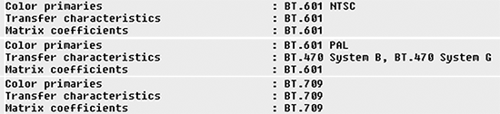
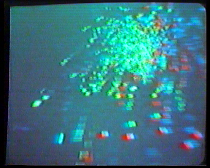
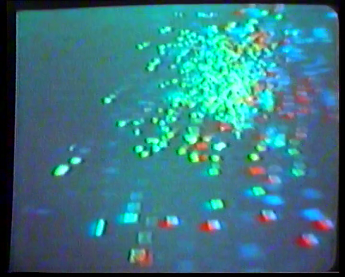
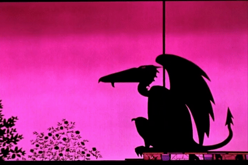
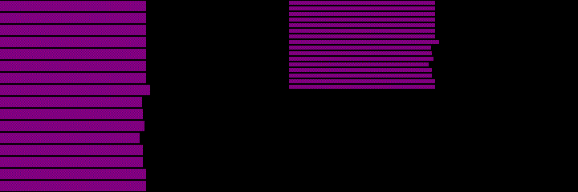
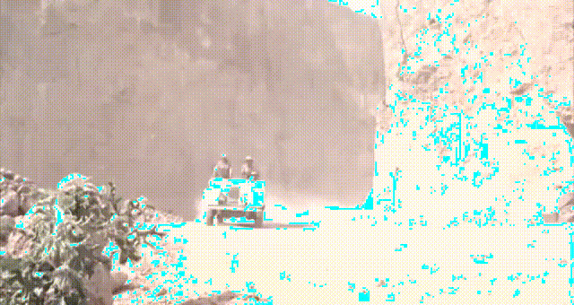
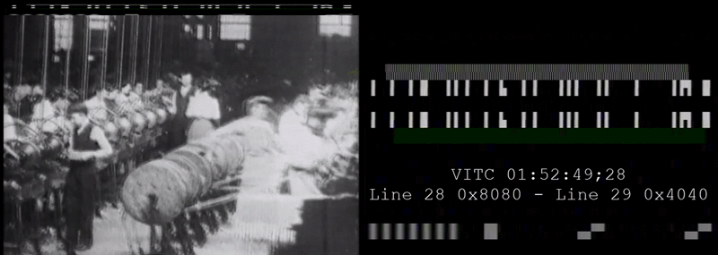

About ffmprovisr
Making FFmpeg EasierFFmpeg is a powerful tool for manipulating audiovisual files. Unfortunately, it also has a steep learning curve, especially for users unfamiliar with a command line interface. This app helps users through the command generation process so that more people can reap the benefits of FFmpeg.
Each button displays helpful information about how to perform a wide variety of tasks using FFmpeg. To use this site, click on the task you would like to perform. A new window will open up with a sample command and a description of how that command works. You can copy this command and understand how the command works with a breakdown of each of the flags.
This page does not have search functionality, but you can open all recipes (second option in the sidebar) and use your browser's search tool (often ctrl+f or cmd+f) to perform a keyword search through all recipes.
TutorialsFor FFmpeg basics, check out the program’s official website.
For instructions on how to install FFmpeg on Mac, Linux, and Windows, refer to Reto Kromer’s installation instructions.
For Bash and command line basics, try the Command Line Crash Course. For a little more context presented in an ffmprovisr style, try explainshell.com!
License

This work is licensed under a Creative Commons Attribution 4.0 International License.
Script Ahoy: Community Resource for Archivists and Librarians Scripting
The Sourcecaster: an app that helps you use the command line to work through common challenges that come up when working with digital primary sources.
Cable Bible: A Guide to Cables and Connectors Used for Audiovisual Tech
Learn about FFmpeg basics
Basic structure of an FFmpeg command
At its basis, an FFmpeg command is relatively simple. After you have installed FFmpeg (see instructions here), the program is invoked simply by typing ffmpeg at the command prompt.
Subsequently, each instruction that you supply to FFmpeg is actually a pair: a flag, which designates the type of action you want to carry out; and then the specifics of that action. Flags are always prepended with a hyphen.
For example, in the instruction -i input_file.ext, the -i flag tells FFmpeg that you are supplying an input file, and input_file.ext states which file it is.
Likewise, in the instruction -c:v prores, the flag -c:v tells FFmpeg that you want to encode the video stream, and prores specifies which codec is to be used. (-c:v is shorthand for -codec:v/-codec:video).
A very basic FFmpeg command looks like this:
- ffmpeg
- starts the command
- -i input_file.ext
- path and name of the input file
- -flag some_action
- tell FFmpeg to do something, by supplying a valid flag and action
- output_file.ext
- path and name of the output file.
Because this is the last part of the command, the filename you type here does not have a flag designating it as the output file.
Streaming vs. Saving
FFplay allows you to stream created video and FFmpeg allows you to save video.
The following command creates and saves a 10-second video of SMPTE bars:
ffmpeg -f lavfi -i smptebars=size=640x480 -t 5 output_file
This command plays and streams SMPTE bars but does not save them on the computer:
ffplay -f lavfi smptebars=size=640x480
The main difference is small but significant: the -i flag is required for FFmpeg but not required for FFplay. Additionally, the FFmpeg script needs to have -t 5 and output.mkv added to specify the length of time to record and the place to save the video.
Learn about more advanced FFmpeg concepts
Filtergraphs
Many FFmpeg commands use filters that manipulate the video or audio stream in some way: for example, hflip to horizontally flip a video, or amerge to merge two or more audio tracks into a single stream.
The use of a filter is signalled by the flag -vf (video filter) or -af (audio filter), followed by the name and options of the filter itself. For example, take the convert colourspace command:
ffmpeg -i input_file -c:v libx264 -vf colormatrix=src:dst output_file
Here, colormatrix is the filter used, with src and dst representing the source and destination colourspaces. This part following the -vf is a filtergraph.
It is also possible to apply multiple filters to an input, which are sequenced together in the filtergraph. A chained set of filters is called a filter chain, and a filtergraph may include multiple filter chains. Filters in a filterchain are separated from each other by commas (,), and filterchains are separated from each other by semicolons (;). For example, take the inverse telecine command:
ffmpeg -i input_file -c:v libx264 -vf "fieldmatch,yadif,decimate" output_file
Here we have a filtergraph including one filter chain, which is made up of three video filters.
It is often prudent to enclose your filtergraph in quotation marks; this means that you can use spaces within the filtergraph. Using the inverse telecine example again, the following filter commands are all valid and equivalent:
-vf fieldmatch,yadif,decimate-vf "fieldmatch,yadif,decimate"-vf "fieldmatch, yadif, decimate"
but -vf fieldmatch, yadif, decimate is not valid.
The ordering of the filters is significant. Video filters are applied in the order given, with the output of one filter being passed along as the input to the next filter in the chain. In the example above, fieldmatch reconstructs the original frames from the inverse telecined video, yadif deinterlaces (this is a failsafe in case any combed frames remain, for example if the source mixes telecined and real interlaced content), and decimate deletes duplicated frames. Clearly, it is not possible to delete duplicated frames before those frames are reconstructed.
Notes
-vfis an alias for-filter:v- If the command involves more than one input or output, you must use the flag
-filter_complexinstead of-vf. - Straight quotation marks ("like this") rather than curved quotation marks (“like this”) should be used.
For more information, check out the FFmpeg wiki Filtering Guide.
Stream mapping
Stream mapping is the practice of defining which of the streams (e.g., video or audio tracks) present in an input file will be present in the output file. FFmpeg recognises five stream types:
a- audiov- videos- subtitled- data (including timecode tracks)t- attachment
Mapping is achieved by use of the -map flag, followed by an action of the type file_number:stream_type[:stream_number]. Numbering is zero-indexed, and it's possible to map by stream type and/or overall stream order within the input file. For example:
-map 0:vmeans ‘take all video streams from the first input file’.-map 0:3means ‘take the fourth stream from the first input file’.-map 0:a:2means ‘take the third audio stream from the first input file’.-map 0:0 -map 0:2means ‘take the first and third streams from the first input file’.-map 0:1 -map 1:0means ‘take the second stream from the first input file and the first stream from the second input file’.
To map all streams in the input file to the output file, use -map 0. However, note that not all container formats can include all stream types: for example, .mp4 cannot contain timecode.
When no mapping is specified in an ffmpeg command, the default for video files is to take just one video and one audio stream for the output: other stream types, such as timecode or subtitles, will not be copied to the output file by default. If multiple video or audio streams are present, the best quality one is automatically selected by FFmpeg.
For more information, check out the FFmpeg wiki Map page, and the official FFmpeg documentation on -map.
Change container (rewrap)
Rewrap a file
ffmpeg -i input_file.ext -c copy -map 0 output_file.ext
This script will rewrap a video file. It will create a new video video file where the inner content (the video, audio, and subtitle data) of the original file is unchanged, but these streams are rehoused within a different container format.
Note: rewrapping is also known as remuxing, short for re-multiplexing.
- ffmpeg
- starts the command
- -i input_file.ext
- path and name of the input file
- -c copy
- copy the streams directly, without re-encoding.
- -map 0
- map all streams of the input to the output.
By default, FFmpeg will only map one stream of each type (video, audio, subtitles) to the output file. However, files may have multiple streams of a given type - for example, a video may have several audio tracks for different languages. Therefore, if you want to preserve all the streams in the original, it's necessary to use this option. - output_file.ext
- path and name of the output file.
The new container you are rewrapping to is defined by the filename extension used here, e.g. .mkv, .mp4, .mov.
Important caveat
It may not be possible to rewrap a file's contents to a new container without re-encoding one or more of the streams within (that is, the video, audio, and subtitle tracks). Some containers can only contain streams of a certain encoding type: for example, the .mp4 container does not support uncompressed audio tracks. (In practice .mp4 goes hand-in-hand with a H.264-encoded video stream and an AAC-encoded video stream, although other types of video and audio streams are possible). Another example is that the Matroska container does not allow data tracks; see the MKV to MP4 recipe.
In such cases, FFmpeg will throw an error. If you encounter errors of this kind, you may wish to consult the list of transcoding recipes.
MKV to MP4
ffmpeg -i input_file.mkv -c:v copy -c:a aac output_file.mp4
This will convert your Matroska (MKV) files to MP4 files.
- ffmpeg
- starts the command
- -i input_file
- path and name of the input file
The extension for the Matroska container is.mkv. - -c:v copy
- copies the video stream without re-encoding it
- -c:a aac
- re-encodes the audio stream using the AAC audio codec
Note that sadly MP4 cannot contain sound encoded by a PCM (Pulse-Code Modulation) audio codec.
For silent videos you can replace-c:a aacby-an, which means that there will be no audio track in the output file. - output_file
- path and name of the output file
The extension for the MP4 container is.mp4.
Rewrap DV video to .dv file
ffmpeg -i input_file -f rawvideo -c:v copy output_file.dv
This script will take a video that is encoded in the DV Codec but wrapped in a different container (such as MOV) and rewrap it into a raw DV file (with the .dv extension). Since DV files potentially contain a great deal of provenance metadata within the DV stream, it is necessary to rewrap files in this method to avoid unintentional stripping of this metadata.
- ffmpeg
- starts the command
- -i input_file
- path and name of the input file
- -f rawvideo
- this tells FFmpeg to pass the video stream as raw video data without remuxing. This step is what ensures the survival of embedded metadata versus a standard rewrap.
- -c:v copy
- copy the DV stream directly, without re-encoding.
- output_file.dv
- tells FFmpeg to use the DV wrapper for the output.
Change codec (transcode)
Transcode into a deinterlaced Apple ProRes LT
ffmpeg -i input_file -c:v prores -profile:v 1 -vf yadif -c:a pcm_s16le output_file.mov
This command transcodes an input file into a deinterlaced Apple ProRes 422 LT file with 16-bit linear PCM encoded audio. The file is deinterlaced using the yadif filter (Yet Another De-Interlacing Filter).
- ffmpeg
- starts the command
- -i input_file
- path, name and extension of the input file
- -c:v prores
- tells FFmpeg to transcode the video stream into Apple ProRes 422
- -profile:v 1
- Declares profile of ProRes you want to use. The profiles are explained below:
- 0 = ProRes 422 (Proxy)
- 1 = ProRes 422 (LT)
- 2 = ProRes 422 (Standard)
- 3 = ProRes 422 (HQ)
- -vf yadif
- Runs a deinterlacing video filter (yet another deinterlacing filter) on the new file.
-vfis an alias for-filter:v. - -c:a pcm_s16le
- tells FFmpeg to encode the audio stream in 16-bit linear PCM
- output_file
- path, name and extension of the output file
The extension for the QuickTime container is.mov.
FFmpeg comes with more than one ProRes encoder:
proresis much faster, can be used for progressive video only, and seems to be better for video according to Rec. 601 (Recommendation ITU-R BT.601).prores_ksgenerates a better file, can also be used for interlaced video, allows also encoding of ProRes 4444 (-c:v prores_ks -profile:v 4) and ProRes 4444 XQ (-c:v prores_ks -profile:v 5), and seems to be better for video according to Rec. 709 (Recommendation ITU-R BT.709).
Transcode to H.264
ffmpeg -i input_file -c:v libx264 -pix_fmt yuv420p -c:a aac output_file
This command takes an input file and transcodes it to H.264 with an .mp4 wrapper, keeping the audio the same codec as the original. The libx264 codec defaults to a “medium” preset for compression quality and a CRF of 23. CRF stands for constant rate factor and determines the quality and file size of the resulting H.264 video. A low CRF means high quality and large file size; a high CRF means the opposite.
- ffmpeg
- starts the command
- -i input_file
- path, name and extension of the input file
- -c:v libx264
- tells FFmpeg to encode the video stream as H.264
- -pix_fmt yuv420p
- libx264 will use a chroma subsampling scheme that is the closest match to that of the input. This can result in Y′CBCR 4:2:0, 4:2:2, or 4:4:4 chroma subsampling. QuickTime and most other non-FFmpeg based players can’t decode H.264 files that are not 4:2:0. In order to allow the video to play in all players, you can specify 4:2:0 chroma subsampling.
- -c:a aac
- encode audio as AAC.
AAC is the codec most often used for audio streams within an .mp4 container. - output_file
- path, name and extension of the output file
In order to use the same basic command to make a higher quality file, you can add some of these presets:
ffmpeg -i input_file -c:v libx264 -pix_fmt yuv420p -preset veryslow -crf 18 -c:a aac output_file
- -preset veryslow
- This option tells FFmpeg to use the slowest preset possible for the best compression quality.
Available presets, from slowest to fastest, are:veryslow,slower,slow,medium,fast,faster,veryfast,superfast,ultrafast. - -crf 18
- Specifying a lower CRF will make a larger file with better visual quality. For H.264 files being encoded with a 4:2:0 chroma subsampling scheme (i.e., using
-pix_fmt yuv420p), the scale ranges between 0-51, with 0 being lossless and 51 the worst possible quality.
If no crf is specified,libx264will use a default value of 23. 18 is often considered a “visually lossless” compression.
For more information, see the FFmpeg and H.264 Encoding Guide on the FFmpeg wiki.
H.264 from DCP
ffmpeg -i input_video_file.mxf -i input_audio_file.mxf -c:v libx264 -pix_fmt yuv420p -c:a aac output_file.mp4
This will transcode MXF wrapped video and audio files to an H.264 encoded MP4 file. Please note this only works for unencrypted, single reel DCPs.
- ffmpeg
- starts the command
- -i input_video_file
- path and name of the video input file. This extension must be
.mxf - -i input_audio_file
- path and name of the audio input file. This extension must be
.mxf - -c:v libx264
- transcodes video to H.264
- -pix_fmt yuv420p
- sets pixel format to yuv420p for greater compatibility with media players
- -c:a aac
- re-encodes using the AAC audio codec
Note that sadly MP4 cannot contain sound encoded by a PCM (Pulse-Code Modulation) audio codec - output_file.mp4
- path, name and .mp4 extension of the output file
Variation: Copy PCM audio streams by using Matroska instead of the MP4 container
ffmpeg -i input_video_file.mxf -i input_audio_file.mxf -c:v libx264 -pix_fmt yuv420p -c:a copy output_file.mkv
- -c:a copy
- re-encodes using the same audio codec
- output_file.mkv
- path, name and .mkv extension of the output file
Create FFV1 Version 3 video in a Matroska container with framemd5 of input
ffmpeg -i input_file -map 0 -dn -c:v ffv1 -level 3 -g 1 -slicecrc 1 -slices 16 -c:a copy output_file.mkv -f framemd5 -an framemd5_output_file
This will losslessly transcode your video with the FFV1 Version 3 codec in a Matroska container. In order to verify losslessness, a framemd5 of the source video is also generated. For more information on FFV1 encoding, try the FFmpeg wiki.
- ffmpeg
- starts the command.
- -i input_file
- path, name and extension of the input file.
- -map 0
- Map all streams that are present in the input file. This is important as FFmpeg will map only one stream of each type (video, audio, subtitles) by default to the output video.
- -dn
- ignore data streams (data no). The Matroska container does not allow data tracks.
- -c:v ffv1
- specifies the FFV1 video codec.
- -level 3
- specifies Version 3 of the FFV1 codec.
- -g 1
- specifies intra-frame encoding, or GOP=1.
- -slicecrc 1
- Adds CRC information for each slice. This makes it possible for a decoder to detect errors in the bitstream, rather than blindly decoding a broken slice. (Read more here).
- -slices 16
- Each frame is split into 16 slices. 16 is a good trade-off between filesize and encoding time.
- -c:a copy
- copies all mapped audio streams.
- output_file.mkv
- path and name of the output file. Use the
.mkvextension to save your file in a Matroska container. Optionally, choose a different extension if you want a different container, such as.movor.avi. - -f framemd5
- Decodes video with the framemd5 muxer in order to generate MD5 checksums for every frame of your input file. This allows you to verify losslessness when compared against the framemd5s of the output file.
- -an
- ignores the audio stream when creating framemd5 (audio no)
- framemd5_output_file
- path, name and extension of the framemd5 file.
Convert DVD to H.264
ffmpeg -i concat:input_file_1\|input_file_2\|input_file_3 -c:v libx264 -c:a aac output_file.mp4
This command allows you to create an H.264 file from a DVD source that is not copy-protected.
Before encoding, you’ll need to establish which of the .VOB files on the DVD or .iso contain the content that you wish to encode. Inside the VIDEO_TS directory, you will see a series of files with names like VTS_01_0.VOB, VTS_01_1.VOB, etc. Some of the .VOB files will contain menus, special features, etc, so locate the ones that contain target content by playing them back in VLC.
- ffmpeg
- starts the command
- -i concat:input files
- lists the input VOB files and directs FFmpeg to concatenate them. Each input file should be separated by a backslash and a pipe, like so:
-i concat:VTS_01_1.VOB\|VTS_01_2.VOB\|VTS_01_3.VOB
The backslash is simply an escape character for the pipe (|). - -c:v libx264
- sets the video codec as H.264
- -c:a aac
- encode audio as AAC.
AAC is the codec most often used for audio streams within an .mp4 container. - output_file.mp4
- path and name of the output file
It’s also possible to adjust the quality of your output by setting the -crf and -preset values:
ffmpeg -i concat:input_file_1\|input_file_2\|input_file_3 -c:v libx264 -crf 18 -preset veryslow -c:a aac output_file.mp4
- -crf 18
- sets the constant rate factor to a visually lossless value. Libx264 defaults to a crf of 23, considered medium quality; a smaller CRF value produces a larger and higher quality video.
- -preset veryslow
- A slower preset will result in better compression and therefore a higher-quality file. The default is medium; slower presets are slow, slower, and veryslow.
Bear in mind that by default, libx264 will only encode a single video stream and a single audio stream, picking the ‘best’ of the options available. To preserve all video and audio streams, add -map parameters:
ffmpeg -i concat:input_file_1\|input_file_2 -map 0:v -map 0:a -c:v libx264 -c:a aac output_file.mp4
- -map 0:v
- encodes all video streams
- -map 0:a
- encodes all audio streams
Transcode to H.265/HEVC
ffmpeg -i input_file -c:v libx265 -pix_fmt yuv420p -c:a copy output_file
This command takes an input file and transcodes it to H.265/HEVC in an .mp4 wrapper, keeping the audio codec the same as in the original file.
Note: FFmpeg must be compiled with libx265, the library of the H.265 codec, for this script to work. (Add the flag --with-x265 if using the brew install ffmpeg method).
- ffmpeg
- starts the command
- -i input file
- path, name and extension of the input file
- -c:v libx265
- tells FFmpeg to encode the video as H.265
- -pix_fmt yuv420p
- libx265 will use a chroma subsampling scheme that is the closest match to that of the input. This can result in Y′CBCR 4:2:0, 4:2:2, or 4:4:4 chroma subsampling. For widest accessibility, it’s a good idea to specify 4:2:0 chroma subsampling.
- -c:a copy
- tells FFmpeg not to change the audio codec
- output file
- path, name and extension of the output file
The libx265 encoding library defaults to a ‘medium’ preset for compression quality and a CRF of 28. CRF stands for ‘constant rate factor’ and determines the quality and file size of the resulting H.265 video. The CRF scale ranges from 0 (best quality [lossless]; largest file size) to 51 (worst quality; smallest file size).
A CRF of 28 for H.265 can be considered a medium setting, corresponding to a CRF of 23 in encoding H.264, but should result in about half the file size.
To create a higher quality file, you can add these presets:
ffmpeg -i input_file -c:v libx265 -pix_fmt yuv420p -preset veryslow -crf 18 -c:a copy output_file
- -preset veryslow
- This option tells FFmpeg to use the slowest preset possible for the best compression quality.
- -crf 18
- Specifying a lower CRF will make a larger file with better visual quality. 18 is often considered a ‘visually lossless’ compression.
Transcode to Ogg/Theora
ffmpeg -i input_file -acodec libvorbis -b:v 690k output_file
This command takes an input file and transcodes it to Ogg/Theora in an .ogv wrapper with 690k video bitrate.
Note: FFmpeg must be installed with support for Ogg Theora. If you are using Homebrew, you can check with brew info ffmpeg and then update it with brew upgrade ffmpeg --with-theora --with-libvorbis if necessary.
- ffmpeg
- starts the command
- -i input file
- path, name and extension of the input file
- -acodec libvorbis
- tells FFmpeg to encode the audio using libvorbis
- -b:v 690k
- specifies the 690k video bitrate
- output file
- path, name and extension of the output file (make sure to include the
.ogvfilename suffix)
This recipe is based on Paul Rouget's recipes.
WAV to MP3
ffmpeg -i input_file.wav -write_id3v1 1 -id3v2_version 3 -dither_method rectangular -out_sample_rate 48k -qscale:a 1 output_file.mp3
This will convert your WAV files to MP3s.
- ffmpeg
- starts the command
- -i input_file
- path and name of the input file
- -write_id3v1 1
- This will write metadata to an ID3v1 tag at the head of the file, assuming you’ve embedded metadata into the WAV file.
- -id3v2_version 3
- This will write metadata to an ID3v2.3 tag at the tail of the file, assuming you’ve embedded metadata into the WAV file.
- -dither_method rectangular
- Dither makes sure you don’t unnecessarily truncate the dynamic range of your audio.
- -out_sample_rate 48k
- Sets the audio sampling frequency to 48 kHz. This can be omitted to use the same sampling frequency as the input.
- -qscale:a 1
- This sets the encoder to use a constant quality with a variable bitrate of between 190-250kbit/s. If you would prefer to use a constant bitrate, this could be replaced with
-b:a 320kto set to the maximum bitrate allowed by the MP3 format. For more detailed discussion on variable vs constant bitrates see here. - output_file
- path and name of the output file
A couple notes
- About ID3v2.3 tag: ID3v2.3 is better supported than ID3v2.4, FFmpeg's default ID3v2 setting.
- About dither methods: FFmpeg comes with a variety of dither algorithms, outlined in the official docs, though some may lead to unintended, drastic digital clipping on some systems.
Generate two access MP3s from input. One with appended audio (such as a copyright notice) and one unmodified.
ffmpeg -i input_file -i input_file_to_append -filter_complex "[0:a:0]asplit=2[a][b];[b]afifo[bb];[1:a:0][bb]concat=n=2:v=0:a=1[concatout]" -map "[a]" -codec:a libmp3lame -dither_method modified_e_weighted -qscale:a 2 output_file.mp3 -map "[concatout]" -codec:a libmp3lame -dither_method modified_e_weighted -qscale:a 2 output_file_appended.mp3
This script allows you to generate two derivative audio files from a master while appending audio from a separate file (for example a copyright or institutional notice) to one of them.
- ffmpeg
- starts the command
- -i input_file
- path, name and extension of the input file (the master file)
- -i input_file_to_append
- path, name and extension of the input file (the file to be appended to access file)
- -filter_complex
- enables the complex filtering to manage splitting the input to two audio streams
- [0:a:0]asplit=2[a][b];
asplitallows audio streams to be split up for separate manipulation. This command splits the audio from the first input (the master file) into two streams "a" and "b"- [b]afifo[bb];
- this buffers the stream "b" to help prevent dropped samples and renames stream to "bb"
- [1:a:0][bb]concat=n=2:v=0:a=1[concatout]
concatis used to join files.n=2tells the filter there are two inputs.v=0:a=1Tells the filter there are 0 video outputs and 1 audio output. This command appends the audio from the second input to the beginning of stream "bb" and names the output "concatout"- -map "[a]"
- this maps the unmodified audio stream to the first output
- -codec:a libmp3lame -dither_method modified_e_weighted -qscale:a 2
- sets up MP3 options (using constant quality)
- output_file
- path, name and extension of the output file (unmodified)
- -map "[concatout]"
- this maps the modified stream to the second output
- -codec:a libmp3lame -dither_method modified_e_weighted -qscale:a 2
- sets up MP3 options (using constant quality)
- output_file_appended
- path, name and extension of the output file (with appended notice)
WAV to AAC/MP4
ffmpeg -i input_file.wav -c:a aac -b:a 128k -dither_method rectangular -ar 44100 output_file.mp4
This will convert your WAV file to AAC/MP4.
- ffmpeg
- starts the command
- -i input_file
- path and name of the input file
- -c:a aac
- sets the audio codec to AAC
- -b:a 128k
- sets the bitrate of the audio to 128k
- -dither_method rectangular
- Dither makes sure you don’t unnecessarily truncate the dynamic range of your audio.
- -ar 44100
- sets the audio sampling frequency to 44100 Hz, or 44.1 kHz, or “CD quality”
- output_file
- path and name of the output file
A note about dither methods. FFmpeg comes with a variety of dither algorithms, outlined in the official docs, though some may lead to unintended, not-subtle digital clipping on some systems.
Change video properties
Transform 4:3 aspect ratio into 16:9 with pillarbox
Transform a video file with 4:3 aspect ratio into a video file with 16:9 aspect ratio by correct pillarboxing.
ffmpeg -i input_file -filter:v "pad=ih*16/9:ih:(ow-iw)/2:(oh-ih)/2" -c:a copy output_file
- ffmpeg
- starts the command
- -i input_file
- path, name and extension of the input file
- -filter:v "pad=ih*16/9:ih:(ow-iw)/2:(oh-ih)/2"
- video padding
This resolution independent formula is actually padding any aspect ratio into 16:9 by pillarboxing, because the video filter uses relative values for input width (iw), input height (ih), output width (ow) and output height (oh). - -c:a copy
- re-encodes using the same audio codec
For silent videos you can replace-c:a copyby-an. - output_file
- path, name and extension of the output file
Transform 16:9 aspect ratio video into 4:3 with letterbox
Transform a video file with 16:9 aspect ratio into a video file with 4:3 aspect ratio by correct letterboxing.
ffmpeg -i input_file -filter:v "pad=iw:iw*3/4:(ow-iw)/2:(oh-ih)/2" -c:a copy output_file
- ffmpeg
- starts the command
- -i input_file
- path, name and extension of the input file
- -filter:v "pad=iw:iw*3/4:(ow-iw)/2:(oh-ih)/2"
- video padding
This resolution independent formula is actually padding any aspect ratio into 4:3 by letterboxing, because the video filter uses relative values for input width (iw), input height (ih), output width (ow) and output height (oh). - -c:a copy
- re-encodes using the same audio codec
For silent videos you can replace-c:a copyby-an. - output_file
- path, name and extension of the output file
Flip the video image horizontally and/or vertically
ffmpeg -i input_file -filter:v "hflip,vflip" -c:a copy output_file
- ffmpeg
- starts the command
- -i input_file
- path, name and extension of the input file
- -filter:v "hflip,vflip"
- flips the image horizontally and vertically
By using only one of the parameters hflip or vflip for filtering the image is flipped on that axis only. The quote marks are not mandatory. - -c:a copy
- re-encodes using the same audio codec
For silent videos you can replace-c:a copyby-an. - output_file
- path, name and extension of the output file
Transform SD into HD with pillarbox
Transform a SD video file with 4:3 aspect ratio into an HD video file with 16:9 aspect ratio by correct pillarboxing.
ffmpeg -i input_file -filter:v "colormatrix=bt601:bt709, scale=1440:1080:flags=lanczos, pad=1920:1080:240:0" -c:a copy output_file
- ffmpeg
- starts the command
- -i input_file
- path, name and extension of the input file
- -filter:v "colormatrix=bt601:bt709, scale=1440:1080:flags=lanczos, pad=1920:1080:240:0"
- set colour matrix, video scaling and padding
Three filters are applied:- The luma coefficients are modified from SD video (according to Rec. 601) to HD video (according to Rec. 709) by a colour matrix. Note that today Rec. 709 is often used also for SD and therefore you may cancel this parameter.
- The scaling filter (
scale=1440:1080) works for both upscaling and downscaling. We use the Lanczos scaling algorithm (flags=lanczos), which is slower but gives better results than the default bilinear algorithm. - The padding filter (
pad=1920:1080:240:0) completes the transformation from SD to HD.
- -c:a copy
- re-encodes using the same audio codec
For silent videos you can replace-c:a copywith-an. - output_file
- path, name and extension of the output file
Change Display Aspect Ratio without reencoding video
ffmpeg -i input_file -c:v copy -aspect 4:3 output_file
- ffmpeg
- starts the command
- -i input_file
- path, name and extension of the input file
- -c:v copy
- Copy all mapped video streams.
- -aspect 4:3
- Change Display Aspect Ratio to
4:3. Experiment with other aspect ratios such as16:9. If used together with-c:v copy, it will affect the aspect ratio stored at container level, but not the aspect ratio stored in encoded frames, if it exists. - output_file
- path, name and extension of the output file
Transcode video to a different colourspace
This command uses a filter to convert the video to a different colour space.
ffmpeg -i input_file -c:v libx264 -vf colormatrix=src:dst output_file
- ffmpeg
- starts the command
- -i input file
- path, name and extension of the input file
- -c:v libx264
- tells FFmpeg to encode the video stream as H.264
- -vf colormatrix=src:dst
- the video filter colormatrix will be applied, with the given source and destination colourspaces.
Accepted values includebt601(Rec.601),smpte170m(Rec.601, 525-line/NTSC version),bt470bg(Rec.601, 625-line/PAL version),bt709(Rec.709), andbt2020(Rec.2020).
For example, to convert from Rec.601 to Rec.709, you would use-vf colormatrix=bt601:bt709. - output file
- path, name and extension of the output file
Note: Converting between colourspaces with FFmpeg can be done via either the colormatrix or colorspace filters, with colorspace allowing finer control (individual setting of colourspace, transfer characteristics, primaries, range, pixel format, etc). See this entry on the FFmpeg wiki, and the FFmpeg documentation for colormatrix and colorspace.
Convert colourspace and embed colourspace metadata
ffmpeg -i input_file -c:v libx264 -vf colormatrix=src:dst -color_primaries val -color_trc val -colorspace val output_file
- ffmpeg
- starts the command
- -i input file
- path, name and extension of the input file
- -c:v libx264
- encode video as H.264
- -vf colormatrix=src:dst
- the video filter colormatrix will be applied, with the given source and destination colourspaces.
- -color_primaries val
- tags video with the given colour primaries.
Accepted values includesmpte170m(Rec.601, 525-line/NTSC version),bt470bg(Rec.601, 625-line/PAL version),bt709(Rec.709), andbt2020(Rec.2020). - -color_trc val
- tags video with the given transfer characteristics (gamma).
Accepted values includesmpte170m(Rec.601, 525-line/NTSC version),gamma28(Rec.601, 625-line/PAL version)1,bt709(Rec.709),bt2020_10(Rec.2020 10-bit), andbt2020_12(Rec.2020 12-bit). - -colorspace val
- tags video as being in the given colourspace.
Accepted values includesmpte170m(Rec.601, 525-line/NTSC version),bt470bg(Rec.601, 625-line/PAL version),bt709(Rec.709),bt2020_cl(Rec.2020 constant luminance), andbt2020_ncl(Rec.2020 non-constant luminance). - output file
- path, name and extension of the output file
Examples
To Rec.601 (525-line/NTSC):
ffmpeg -i input_file -c:v libx264 -vf colormatrix=bt709:smpte170m -color_primaries smpte170m -color_trc smpte170m -colorspace smpte170m output_file
To Rec.601 (625-line/PAL):
ffmpeg -i input_file -c:v libx264 -vf colormatrix=bt709:bt470bg -color_primaries bt470bg -color_trc gamma28 -colorspace bt470bg output_file
To Rec.709:
ffmpeg -i input_file -c:v libx264 -vf colormatrix=bt601:bt709 -color_primaries bt709 -color_trc bt709 -colorspace bt709 output_file
MediaInfo output examples:
⚠ Using this command it is possible to add Rec.709 tags to a file that is actually Rec.601 (etc), so apply with caution!
These commands are relevant for H.264 and H.265 videos, encoded with libx264 and libx265 respectively.
Note: If you wish to embed colourspace metadata without changing to another colourspace, omit -vf colormatrix=src:dst. However, since it is libx264/libx265 that writes the metadata, it’s not possible to add these tags without reencoding the video stream.
For all possible values for -color_primaries, -color_trc, and -colorspace, see the FFmpeg documentation on codec options.
1. Out of step with the regular pattern, -color_trc doesn’t accept bt470bg; it is instead here referred to directly as gamma.
In the Rec.601 standard, 525-line/NTSC and 625-line/PAL video have assumed gammas of 2.2 and 2.8 respectively. ↩
Modify image and sound speed
E.g. for converting 24fps to 25fps with audio pitch compensation for PAL access copies. (Thanks @kieranjol!)
ffmpeg -i input_file -filter_complex "[0:v]setpts=input_fps/output_fps*PTS[v]; [0:a]atempo=output_fps/input_fps[a]" -map "[v]" -map "[a]" output_file
- ffmpeg
- starts the command
- -i input_file
- path, name and extension of the input file
- -filter_complex "[0:v]setpts=input_fps/output_fps*PTS[v]; [0:a]atempo=output_fps/input_fps[a]"
- A complex filter is needed here, in order to handle video stream and the audio stream separately. The
setptsvideo filter modifies the PTS (presentation time stamp) of the video stream, and theatempoaudio filter modifies the speed of the audio stream while keeping the same sound pitch. Note that the parameter order for the image and for the sound are inverted:- In the video filter
setptsthe numeratorinput_fpssets the input speed and the denominatoroutput_fpssets the output speed; both values are given in frames per second. - In the sound filter
atempothe numeratoroutput_fpssets the output speed and the denominatorinput_fpssets the input speed; both values are given in frames per second.
- In the video filter
- -map "[v]"
- maps the video stream and:
- -map "[a]"
- maps the audio stream together into:
- output_file
- path, name and extension of the output file
Set stream properties
Find undetermined or unknown stream properties
These examples use QuickTime inputs and outputs. The strategy will vary or may not be possible in other file formats. In the case of these examples it is the intention to make a lossless copy while clarifying an unknown characteristic of the stream.
ffprobe input_file -show_streams
- ffprobe
- starts the command
- input_file
- path, name and extension of the input file
- -show_streams
- Shows metadata of stream properties
Values that are set to 'unknown' and 'undetermined' may be unspecified within the stream. An unknown aspect ratio would be expressed as '0:1'. Streams with many unknown properties may have interoperability issues or not play as intended. In many cases, an unknown or undetermined value may be accurate because the information about the source is unclear, but often the value is intended to be known. In many cases the stream will played with an assumed value if undetermined (for instance a display_aspect_ratio of '0:1' may be played as 'WIDTH:HEIGHT'), but this may or may not be what is intended. Use carefully.
Set aspect ratio
If the display_aspect_ratio is set to '0:1' it may be clarified with the -aspect option and stream copy.
ffmpeg -i input_file -c copy -map 0 -aspect DAR_NUM:DAR_DEN output_file
- ffmpeg
- starts the command
- -i input_file
- path, name and extension of the input file
- -c copy
- Usings stream copy for all streams
- -map 0
- tells FFmpeg to map all streams of the input to the output.
- -aspect DAR_NUM:DAR_DEN
- Replace DAR_NUM with the display aspect ratio numerator and DAR_DEN with the display aspect ratio denominator, such as -aspect 4:3 or -aspect 16:9.
- output_file
- path, name and extension of the output file
Adding other stream properties.
Other properties may be clarified in a similar way. Replace -aspect and its value with other properties such as shown in the options below. Note that setting color values in QuickTime requires that -movflags write_colr is set.
- -color_primaries VALUE -movflags write_colr
- Set a new color_primaries value.
- -color_trc VALUE -movflags write_colr
- Set a new color_transfer value.
- -field_order VALUE
- Set interlacement values.
The possible values for -color_primaries, -color_trc, and -field_order are given in the Codec Options section of the FFmpeg docs - scroll down to near the bottom of the section.
Crop video
ffmpeg -i input_file -vf "crop=width:height" output_file
This command crops the input video to the dimensions defined
- ffmpeg
- starts the command
- -i input_file
- path, name and extension of the input file
- -vf "width:height"
- Crops the video to the given width and height (in pixels).
By default, the crop area is centred: that is, the position of the top left of the cropped area is set to x = (input_width - output_width) / 2, y = input_height - output_height) / 2. - output_file
- path, name and extension of the output file
It's also possible to specify the crop position by adding the x and y coordinates representing the top left of your cropped area to your crop filter, as such:
ffmpeg -i input_file -vf "crop=width:height[:x_position:y_position]" output_file
Examples
The original frame, a screenshot of the SMPTE colourbars:
Result of the command ffmpeg -i smpte_coloursbars.mov -vf "crop=500:500" output_file:
Result of the command ffmpeg -i smpte_coloursbars.mov -vf "crop=500:500:0:0" output_file, appending :0:0 to crop from the top left corner:
Result of the command ffmpeg -i smpte_coloursbars.mov -vf "crop=500:300:500:30" output_file:
Change or view audio properties
Extract audio from an AV file
ffmpeg -i input_file -c:a copy -vn output_file
This command extracts the audio stream without loss from an audiovisual file.
- ffmpeg
- starts the command
- -i input_file
- path, name and extension of the input file
- -c:a copy
- re-encodes using the same audio codec
- -vn
- no video stream
- output_file
- path, name and extension of the output file
Combine audio tracks into one in a video file
ffmpeg -i input_file -filter_complex "[0:a:0][0:a:1]amerge[out]" -map 0:v -map "[out]" -c:v copy -shortest output_file
This command combines two audio tracks present in a video file into one stream. It can be useful in situations where a downstream process, like YouTube’s automatic captioning, expect one audio track. To ensure that you’re mapping the right audio tracks run ffprobe before writing the script to identify which tracks are desired. More than two audio streams can be combined by extending the pattern present in the -filter_complex option.
- ffmpeg
- starts the command
- -i input_file
- path, name and extension of the input file
- -filter_complex
- tells ffmpeg that we will be using a complex filter
- "
- quotation mark to start filtergraph
- [0:a:0][0:a:1]amerge[out]
- combines the two audio tracks into one
- "
- quotation mark to end filtergraph
- -map 0:v
- map the video
- -map "[out]"
- map the combined audio defined by the filter
- -c:v copy
- copy the video
- -shortest
- limit to the shortest stream
- output_file
- path, name and extension of the video output file
Flip audio phase shift
ffmpeg -i input_file -af pan="stereo|c0=c0|c1=-1*c1" output_file
This command inverses the audio phase of the second channel by rotating it 180°.
- ffmpeg
- starts the command
- -i input file
- path, name and extension of the input file
- -af
- specifies that the next section should be interpreted as an audio filter
- pan=
- tell the quoted text below to use the pan filter
- "stereo|c0=c0|c1=-1*c1"
- maps the output's first channel (c0) to the input's first channel and the output's second channel (c1) to the inverse of the input's second channel
- output file
- path, name and extension of the output file
Calculate Loudness Levels
ffmpeg -i input_file -af loudnorm=print_format=json -f null -
This filter calculates and outputs loudness information in json about an input file (labeled input) as well as what the levels would be if loudnorm were applied in its one pass mode (labeled output). The values generated can be used as inputs for a 'second pass' of the loudnorm filter allowing more accurate loudness normalization than if it is used in a single pass.
These instructions use the loudnorm defaults, which align well with PBS recommendations for target loudness. More information can be found at the loudnorm documentation.
Information about PBS loudness standards can be found in the PBS Technical Operating Specifications document. Information about EBU loudness standards can be found in the EBU R 128 recommendation document.
- ffmpeg
- starts the command
- input_file
- path, name and extension of the input file
- -af loudnorm
- activates the loudnorm filter
- print_format=json
- sets the output format for loudness information to json. This format makes it easy to use in a second pass. For a more human readable output, this can be set to
print_format=summary - -f null -
- sets the file output to null (since we are only interested in the metadata generated)
RIAA Equalization
ffmpeg -i input_file -af aemphasis=type=riaa output_file
This will apply RIAA equalization to an input file allowing correct listening of audio transferred 'flat' (without EQ) from records that used this EQ curve. For more information about RIAA equalization see the Wikipedia page on the subject.
- ffmpeg
- starts the command
- input_file
- path, name and extension of the input file
- -af aemphasis=type=riaa
- activates the aemphasis filter and sets it to use RIAA equalization
- output_file
- path and name of output file
One Pass Loudness Normalization
ffmpeg -i input_file -af loudnorm=dual_mono=true -ar 48k output_file
This will normalize the loudness of an input using one pass, which is quicker but less accurate than using two passes. This command uses the loudnorm filter defaults for target loudness. These defaults align well with PBS recommendations, but loudnorm does allow targeting of specific loudness levels. More information can be found at the loudnorm documentation.
Information about PBS loudness standards can be found in the PBS Technical Operating Specifications document. Information about EBU loudness standards can be found in the EBU R 128 recommendation document.
- ffmpeg
- starts the command
- input_file
- path, name and extension of the input file
- -af loudnorm
- activates the loudnorm filter with default settings
- dual_mono=true
- (optional) Use this for mono files meant to be played back on stereo systems for correct loudness. Not necessary for multi-track inputs.
- -ar 48k
- Sets the output sample rate to 48 kHz. (The loudnorm filter upsamples to 192 kHz so it is best to manually set a desired output sample rate).
- output_file
- path, name and extension for output file
Two Pass Loudness Normalization
ffmpeg -i input_file -af loudnorm=dual_mono=true:measured_I=input_i:measured_TP=input_tp:measured_LRA=input_lra:measured_thresh=input_thresh:offset=target_offset:linear=true -ar 48k output_file
This command allows using the levels calculated using a first pass of the loudnorm filter to more accurately normalize loudness. This command uses the loudnorm filter defaults for target loudness. These defaults align well with PBS recommendations, but loudnorm does allow targeting of specific loudness levels. More information can be found at the loudnorm documentation.
Information about PBS loudness standards can be found in the PBS Technical Operating Specifications document. Information about EBU loudness standards can be found in the EBU R 128 recommendation document.
- ffmpeg
- starts the command
- input_file
- path, name and extension of the input file
- -af loudnorm
- activates the loudnorm filter with default settings
- dual_mono=true
- (optional) use this for mono files meant to be played back on stereo systems for correct loudness. Not necessary for multi-track inputs.
- measured_I=input_i
- use the 'input_i' value (integrated loudness) from the first pass in place of input_i
- measured_TP=input_tp
- use the 'input_tp' value (true peak) from the first pass in place of input_tp
- measured_LRA=input_lra
- use the 'input_lra' value (loudness range) from the first pass in place of input_lra
- measured_LRA=input_thresh
- use the 'input_thresh' value (threshold) from the first pass in place of input_thresh
- offset=target_offset
- use the 'target_offset' value (offset) from the first pass in place of target_offset
- linear=true
- tells loudnorm to use linear normalization
- -ar 48k
- Sets the output sample rate to 48 kHz. (The loudnorm filter upsamples to 192 kHz so it is best to manually set a desired output sample rate).
- output_file
- path, name and extension for output file
Fix AV Sync: Resample audio
ffmpeg -i input_file -c:v copy -c:a pcm_s16le -af "aresample=async=1000" output_file
- ffmpeg
- starts the command
- input_file
- path, name and extension of the input file
- -c:v copy
- Copy all mapped video streams.
- -c:a pcm_s16le
- tells FFmpeg to encode the audio stream in 16-bit linear PCM (little endian)
- -af "aresample=async=1000"
- Uses the aresample filter to stretch/squeeze samples to given timestamps, with a maximum of 1000 samples per second compensation.
- output_file
- path, name and extension of the output file. Try different file extensions such as mkv, mov, mp4, or avi.
Join, trim, or excerpt a video
Join files together
ffmpeg -f concat -i mylist.txt -c copy output_file
This command takes two or more files of the same file type and joins them together to make a single file. All that the program needs is a text file with a list specifying the files that should be joined. However, it only works properly if the files to be combined have the exact same codec and technical specifications. Be careful, FFmpeg may appear to have successfully joined two video files with different codecs, but may only bring over the audio from the second file or have other weird behaviors. Don’t use this command for joining files with different codecs and technical specs and always preview your resulting video file!
- ffmpeg
- starts the command
- -f concat
- forces ffmpeg to concatenate the files and to keep the same file format
- -i mylist.txt
- path, name and extension of the input file. Per the FFmpeg documentation, it is preferable to specify relative rather than absolute file paths, as allowing absolute file paths may pose a security risk.
This text file contains the list of files to be concatenated and should be formatted as follows:file './first_file.ext' file './second_file.ext' . . . file './last_file.ext'
In the above, file is simply the word "file". Straight apostrophes ('like this') rather than curved quotation marks (‘like this’) must be used to enclose the file paths.
Note: If specifying absolute file paths in the .txt file, add-safe 0before the input file.
e.g.:ffmpeg -f concat -safe 0 -i mylist.txt -c copy output_file - -c copy
- use stream copy mode to re-mux instead of re-encode
- output_file
- path, name and extension of the output file
For more information, see the FFmpeg wiki page on concatenating files.
Join files together
ffmpeg -i input_1.avi -i input_2.mp4 -filter_complex "[0:v:0][0:a:0][1:v:0][1:a:0]concat=n=2:v=1:a=1[video_out][audio_out]" -map "[video_out]" -map "[audio_out]" output_file
This command takes two or more files of the different file types and joins them together to make a single file.
The input files may differ in many respects - container, codec, chroma subsampling scheme, framerate, etc. However, the above command only works properly if the files to be combined have the same dimensions (e.g., 720x576). Also note that if the input files have different framerates, then the output file will be of variable framerate.
Some aspects of the input files will be normalised: for example, if an input file contains a video track and an audio track that do not have exactly the same duration, the shorter one will be padded. In the case of a shorter video track, the last frame will be repeated in order to cover the missing video; in the case of a shorter audio track, the audio stream will be padded with silence.
- ffmpeg
- starts the command
- -i input_1.ext
- path, name and extension of the first input file
- -i input_2.ext
- path, name and extension of the second input file
- -filter_complex
- states that a complex filtergraph will be used
- "
- quotation mark to start filtergraph
- [0:v:0][0:a:0]
- selects the first video stream and first audio stream from the first input.
Each reference to a specific stream is enclosed in square brackets. In the first stream reference,0:v:0, the first zero refers to the first input file,vmeans video stream, and the second zero indicates that it is the first video stream in the file that should be selected. Likewise,0:a:0means the first audio stream in the first input file.
As demonstrated above, ffmpeg uses zero-indexing:0means the first input/stream/etc,1means the second input/stream/etc, and4would mean the fifth input/stream/etc. - [1:v:0][1:a:0]
- As described above, this means select the first video and audio streams from the second input file.
- concat=
- starts the
concatfilter - n=2
- states that there are two input files
- :
- separator
- v=1
- sets the number of output video streams.
Note that this must be equal to the number of video streams selected from each segment. - :
- separator
- a=1
- sets the number of output audio streams.
Note that this must be equal to the number of audio streams selected from each segment. - [video_out]
- name of the concatenated output video stream. This is a variable name which you define, so you could call it something different, like “vOut”, “outv”, or “banana”.
- [audio_out]
- name of the concatenated output audio stream. Again, this is a variable name which you define.
- "
- quotation mark to end filtergraph
- -map "[video_out]"
- map the concatenated video stream into the output file by referencing the variable defined above
- -map "[audio_out]"
- map the concatenated audio stream into the output file by referencing the variable defined above
- output_file
- path, name and extension of the output file
If no characteristics of the output files are specified, ffmpeg will use the default encodings associated with the given output file type. To specify the characteristics of the output stream(s), add flags after each -map "[out]" part of the command.
For example, to ensure that the video stream of the output file is visually lossless H.264 with a 4:2:0 chroma subsampling scheme, the command above could be amended to include the following:
-map "[video_out]" -c:v libx264 -pix_fmt yuv420p -preset veryslow -crf 18
Likewise, to encode the output audio stream as mp3, the command could include the following:
-map "[audio_out]" -c:a libmp3lame -dither_method modified_e_weighted -qscale:a 2
Variation: concatenating files of different resolutions
To concatenate files of different resolutions, you need to resize the videos to have matching resolutions prior to concatenation. The most basic way to do this is by using a scale filter and giving the dimensions of the file you wish to match:
-vf scale=1920:1080:flags=lanczos
(The Lanczos scaling algorithm is recommended, as it is slower but better than the default bilinear algorithm).
The rescaling should be applied just before the point where the streams to be used in the output file are listed. Select the stream you want to rescale, apply the filter, and assign that to a variable name (rescaled_video in the below example). Then you use this variable name in the list of streams to be concatenated.
ffmpeg -i input_1.avi -i input_2.mp4 -filter_complex "[0:v:0] scale=1920:1080:flags=lanczos [rescaled_video], [rescaled_video] [0:a:0] [1:v:0] [1:a:0] concat=n=2:v=1:a=1 [video_out] [audio_out]" -map "[video_out]" -map "[audio_out]" output_file
However, this will only have the desired visual output if the inputs have the same aspect ratio. If you wish to concatenate an SD and an HD file, you will also wish to pillarbox the SD file while upscaling. (See the Convert 4:3 to pillarboxed HD command). The full command would look like this:
ffmpeg -i input_1.avi -i input_2.mp4 -filter_complex "[0:v:0] scale=1440:1080:flags=lanczos, pad=1920:1080:(ow-iw)/2:(oh-ih)/2 [to_hd_video], [to_hd_video] [0:a:0] [1:v:0] [1:a:0] concat=n=2:v=1:a=1 [video_out] [audio_out]" -map "[video_out]" -map "[audio_out]" output_file
Here, the first input is an SD file which needs to be upscaled to match the second input, which is 1920x1080. The scale filter enlarges the SD input to the height of the HD frame, keeping the 4:3 aspect ratio; then, the video is pillarboxed within a 1920x1080 frame.
Variation: concatenating files of different framerates
If the input files have different framerates, then the output file may be of variable framerate. To explicitly obtain an output file of constant framerate, you may wish convert an input (or multiple inputs) to a different framerate prior to concatenation.
You can speed up or slow down a file using the fps and atempo filters (see also the Modify speed command).
Here's an example of the full command, in which input_1 is 30fps, input_2 is 25fps, and 25fps is the desired output speed.
ffmpeg -i input_1.avi -i input_2.mp4 -filter_complex "[0:v:0] fps=fps=25 [video_to_25fps]; [0:a:0] atempo=(25/30) [audio_to_25fps]; [video_to_25fps] [audio_to_25fps] [1:v:0] [1:a:0] concat=n=2:v=1:a=1 [video_out] [audio_out]" -map "[video_out]" -map "[audio_out]" output_file
Note that the fps filter will drop or repeat frames as necessary in order to achieve the desired frame rate - see the FFmpeg fps docs for more details.
For more information, see the FFmpeg wiki page on concatenating files of different types.
Split file into segments
ffmpeg -i input_file -c copy -map 0 -f segment -segment_time 60 -reset_timestamps 1 output_file-%03d.mkv
- ffmpeg
- Starts the command.
- -i input_file
- Takes in a normal file.
- -c copy
- Use stream copy mode to re-mux instead of re-encode.
- -map 0
- tells FFmpeg to map all streams of the input to the output.
- -f segment
- Use segment muxer for generating the output.
- -segment_time 60
- Set duration of each segment (in seconds). This example creates segments with max. duration of 60s each.
- -reset_timestamps 1
- Reset timestamps of each segment to 0. Meant to ease the playback of the generated segments.
- output_file-%03d.mkv
-
Path, name and extension of the output file.
In order to have an incrementing number in each segment filename, FFmpeg supports printf-style syntax for a counter.In this example, '%03d' means: 3-digits, zero-padded
Examples:%03d: 000, 001, 002, ... 999%05d: 00000, 00001, 00002, ... 99999%d: 0, 1, 2, 3, 4, ... 23, 24, etc.
Trim a video without re-encoding
ffmpeg -i input_file -ss 00:02:00 -to 00:55:00 -c copy -map 0 output_file
This command allows you to create an excerpt from a video file without re-encoding the image data.
- ffmpeg
- starts the command
- -i input_file
- path, name and extension of the input file
- -ss 00:02:00
- sets in point at 00:02:00
- -to 00:55:00
- sets out point at 00:55:00
- -c copy
- use stream copy mode (no re-encoding)
- -map 0
- tells FFmpeg to map all streams of the input to the output.
Note: watch out when using-sswith-c copyif the source is encoded with an interframe codec (e.g., H.264). Since FFmpeg must split on i-frames, it will seek to the nearest i-frame to begin the stream copy. - output_file
- path, name and extension of the output file
Variation: trim video by setting duration, by using -t instead of -to
ffmpeg -i input_file -ss 00:05:00 -t 10 -c copy output_file
- -ss 00:05:00 -t 10
- Beginning five minutes into the original video, this command will create a 10-second-long excerpt.
Note: In order to keep the original timestamps, without trying to sanitise them, you may add the -copyts option.
Excerpt from beginning
ffmpeg -i input_file -t 5 -c copy -map 0 output_file
This command captures a certain portion of a video file, starting from the beginning and continuing for the amount of time (in seconds) specified in the script. This can be used to create a preview file, or to remove unwanted content from the end of the file. To be more specific, use timecode, such as 00:00:05.
- ffmpeg
- starts the command
- -i input_file
- path, name and extension of the input file
- -t 5
- tells FFmpeg to stop copying from the input file after a certain time, and specifies the number of seconds after which to stop copying. In this case, 5 seconds is specified.
- -c copy
- use stream copy mode to re-mux instead of re-encode
- -map 0
- tells FFmpeg to map all streams of the input to the output.
- output_file
- path, name and extension of the output file
Excerpt to end
ffmpeg -i input_file -ss 5 -c copy -map 0 output_file
This command copies a video file starting from a specified time, removing the first few seconds from the output. This can be used to create an excerpt, or remove unwanted content from the beginning of a video file.
- ffmpeg
- starts the command
- -i input_file
- path, name and extension of the input file
- -ss 5
- tells FFmpeg what timecode in the file to look for to start copying, and specifies the number of seconds into the video that FFmpeg should start copying. To be more specific, you can use timecode such as 00:00:05.
- -c copy
- use stream copy mode to re-mux instead of re-encode
- -map 0
- tells FFmpeg to map all streams of the input to the output.
- output_file
- path, name and extension of the output file
Excerpt from end
ffmpeg -sseof -5 -i input_file -c copy -map 0 output_file
This command copies a video file starting from a specified time before the end of the file, removing everything before from the output. This can be used to create an excerpt, or extract content from the end of a video file (e.g. for extracting the closing credits).
- ffmpeg
- starts the command
- -sseof -5
- This parameter must stay before the input file. It tells FFmpeg what timecode in the file to look for to start copying, and specifies the number of seconds from the end of the video that FFmpeg should start copying. The end of the file has index 0 and the minus sign is needed to reference earlier portions. To be more specific, you can use timecode such as -00:00:05. Note that in most file formats it is not possible to seek exactly, so FFmpeg will seek to the closest point before.
- -i input_file
- path, name and extension of the input file
- -c copy
- use stream copy mode to re-mux instead of re-encode
- -map 0
- tells FFmpeg to map all streams of the input to the output.
- output_file
- path, name and extension of the output file
Work with interlaced video
Upscaled, Pillar-boxed HD H.264 Access Files from SD NTSC source
ffmpeg -i input_file -c:v libx264 -filter:v "yadif, scale=1440:1080:flags=lanczos, pad=1920:1080:(ow-iw)/2:(oh-ih)/2, format=yuv420p" output_file
- ffmpeg
- starts the command
- -i input_file
- path, name and extension of the input file
- -c:v libx264
- encodes video stream with libx264 (h264)
- -filter:v
- a video filter will be used
- "
- quotation mark to start filtergraph
- yadif
- deinterlacing filter (‘yet another deinterlacing filter’)
By default, yadif will output one frame for each frame. Outputting one frame for each field (thereby doubling the frame rate) withyadif=1may produce visually better results. - scale=1440:1080:flags=lanczos
- resizes the image to 1440x1080, using the Lanczos scaling algorithm, which is slower but better than the default bilinear algorithm.
- pad=1920:1080:(ow-iw)/2:(oh-ih)/2
- pads the area around the 4:3 input video to create a 16:9 output video
- format=yuv420p
- specifies a pixel format of Y′CBCR 4:2:0
- "
- quotation mark to end filtergraph
- output_file
- path, name and extension of the output file
Note: the very same scaling filter also downscales a bigger image size into HD.
Deinterlace a video
ffmpeg -i input_file -c:v libx264 -vf "yadif,format=yuv420p" output_file
This command takes an interlaced input file and outputs a deinterlaced H.264 MP4.
- ffmpeg
- starts the command
- -i input file
- path, name and extension of the input file
- -c:v libx264
- tells FFmpeg to encode the video stream as H.264
- -vf
- video filtering will be used (
-vfis an alias of-filter:v) - "
- start of filtergraph (see below)
- yadif
- deinterlacing filter (‘yet another deinterlacing filter’)
By default, yadif will output one frame for each frame. Outputting one frame for each field (thereby doubling the frame rate) withyadif=1may produce visually better results. - ,
- separates filters
- format=yuv420p
- chroma subsampling set to 4:2:0
By default,libx264will use a chroma subsampling scheme that is the closest match to that of the input. This can result in Y′CBCR 4:2:0, 4:2:2, or 4:4:4 chroma subsampling. QuickTime and most other non-FFmpeg based players can’t decode H.264 files that are not 4:2:0, therefore it’s advisable to specify 4:2:0 chroma subsampling. - "
- end of filtergraph
- output file
- path, name and extension of the output file
"yadif,format=yuv420p" is an FFmpeg filtergraph. Here the filtergraph is made up of one filter chain, which is itself made up of the two filters (separated by the comma).
The enclosing quote marks are necessary when you use spaces within the filtergraph, e.g. -vf "yadif, format=yuv420p", and are included above as an example of good practice.
Note: FFmpeg includes several deinterlacers apart from yadif: bwdif, w3fdif, kerndeint, and nnedi.
For more H.264 encoding options, see the latter section of the encode H.264 command.
Example
Before and after deinterlacing:
 Inverse telecine a video file
ffmpeg -i input_file -c:v libx264 -vf "fieldmatch,yadif,decimate" output_file
The inverse telecine procedure reverses the 3:2 pull down process, restoring 29.97fps interlaced video to the 24fps frame rate of the original film source.
- ffmpeg
- starts the command
- -i input file
- path, name and extension of the input file
- -c:v libx264
- encode video as H.264
- -vf "fieldmatch,yadif,decimate"
- applies these three video filters to the input video.
Fieldmatch is a field matching filter for inverse telecine - it reconstructs the progressive frames from a telecined stream.
Yadif (‘yet another deinterlacing filter’) deinterlaces the video. (Note that FFmpeg also includes several other deinterlacers).
Decimate deletes duplicated frames. - output file
- path, name and extension of the output file
"fieldmatch,yadif,decimate" is an FFmpeg filtergraph. Here the filtergraph is made up of one filter chain, which is itself made up of the three filters (separated by commas).
The enclosing quote marks are necessary when you use spaces within the filtergraph, e.g. -vf "fieldmatch, yadif, decimate", and are included above as an example of good practice.
Note that if applying an inverse telecine procedure to a 29.97i file, the output framerate will actually be 23.976fps.
This command can also be used to restore other framerates.
Example
Before and after inverse telecine:
Change field order of an interlaced video
ffmpeg -i input_file -c:v video_codec -filter:v setfield=tff output_file
- ffmpeg
- starts the command
- -i input_file
- path, name and extension of the input file
- -filter:v setfield=tff
- Sets the field order to top field first. Use
setfield=bfffor bottom field first. - -c:v video_codec
- As a video filter is used, it is not possible to use
-c copy. The video must be re-encoded with whatever video codec is chosen, e.g.ffv1,v210orprores. - output_file
- path, name and extension of the output file
Check video file interlacement patterns
ffmpeg -i input file -filter:v idet -f null -
- ffmpeg
- starts the command
- -i input_file
- path, name and extension of the input file
- -filter:v idet
- This calls the idet (detect video interlacing type) filter.
- -f null
- Video is decoded with the
nullmuxer. This allows video decoding without creating an output file. - -
- FFmpeg syntax requires a specified output, and
-is just a place holder. No file is actually created.
Overlay timecode or text
Create centered, transparent text watermark
E.g For creating access copies with your institutions name
ffmpeg -i input_file -vf drawtext="fontfile=font_path:fontsize=font_size:text=watermark_text:fontcolor=font_colour:alpha=0.4:x=(w-text_w)/2:y=(h-text_h)/2" output_file
- ffmpeg
- starts the command
- -i input_file
- path, name and extension of the input file
- -vf drawtext=
- This calls the drawtext filter with the following options:
- fontfile=font_path
- Set path to font. For example in macOS:
fontfile=/Library/Fonts/AppleGothic.ttf - fontsize=font_size
- Set font size.
35is a good starting point for SD. Ideally this value is proportional to video size, for example use ffprobe to acquire video height and divide by 14. - text=watermark_text
- Set the content of your watermark text. For example:
text='FFMPROVISR EXAMPLE TEXT' - fontcolor=font_colour
- Set colour of font. Can be a text string such as
fontcolor=whiteor a hexadecimal value such asfontcolor=0xFFFFFF - alpha=0.4
- Set transparency value.
- x=(w-text_w)/2:y=(h-text_h)/2
- Sets x and y coordinates for the watermark. These relative values will centre your watermark regardless of video dimensions.
-vfis a shortcut for-filter:v. - output_file
- path, name and extension of the output file.
Overlay image watermark on video
ffmpeg -i input_video file -i input_image_file -filter_complex overlay=main_w-overlay_w-5:5 output_file
- ffmpeg
- starts the command
- -i input_video_file
- path, name and extension of the input video file
- -i input_image_file
- path, name and extension of the image file
- -filter_complex overlay=main_w-overlay_w-5:5
- This calls the overlay filter and sets x and y coordinates for the position of the watermark on the video. Instead of hardcoding specific x and y coordinates,
main_w-overlay_w-5:5uses relative coordinates to place the watermark in the upper right hand corner, based on the width of your input files. Please see the FFmpeg documentation for more examples. - output_file
- path, name and extension of the output file
Create a burnt in timecode on your image
ffmpeg -i input_file -vf drawtext="fontfile=font_path:fontsize=font_size:timecode=starting_timecode:fontcolor=font_colour:box=1:boxcolor=box_colour:rate=timecode_rate:x=(w-text_w)/2:y=h/1.2" output_file
- ffmpeg
- starts the command
- -i input_file
- path, name and extension of the input file
- -vf drawtext=
- This calls the drawtext filter with the following options:
- "
- quotation mark to start drawtext filter command
- fontfile=font_path
- Set path to font. For example in macOS:
fontfile=/Library/Fonts/AppleGothic.ttf - fontsize=font_size
- Set font size.
35is a good starting point for SD. Ideally this value is proportional to video size, for example use ffprobe to acquire video height and divide by 14. - timecode=starting_timecode
- Set the timecode to be displayed for the first frame. Timecode is to be represented as
hh:mm:ss[:;.]ff. Colon escaping is determined by O.S, for example in Ubuntutimecode='09\\:50\\:01\\:23'. Ideally, this value would be generated from the file itself using ffprobe. - fontcolor=font_colour
- Set colour of font. Can be a text string such as
fontcolor=whiteor a hexadecimal value such asfontcolor=0xFFFFFF - box=1
- Enable box around timecode
- boxcolor=box_colour
- Set colour of box. Can be a text string such as
fontcolor=blackor a hexadecimal value such asfontcolor=0x000000 - rate=timecode_rate
- Framerate of video. For example
25/1 - x=(w-text_w)/2:y=h/1.2
- Sets x and y coordinates for the timecode. These relative values will horizontally centre your timecode in the bottom third regardless of video dimensions.
- "
- quotation mark to end drawtext filter command
- output_file
- path, name and extension of the output file.
Note: -vf is a shortcut for -filter:v.
Embed a subtitle file into a movie file
ffmpeg -i input_file -i subtitles_file -c copy -c:s mov_text output_file
- ffmpeg
- starts the command
- -i input_file
- path, name and extension of the input file
- -i subtitles_file
- path to subtitles file, e.g.
subtitles.srt - -c copy
- enable stream copy (no re-encode)
- -c:s mov_text
- Encode subtitles using the
mov_textcodec. Note: Themov_textcodec works for MP4 and MOV containers. For the MKV container, acceptable formats areASS,SRT, andSSA. - output_file
- path, name and extension of the output file
Note: -c:s is a shortcut for -scodec
Create thumbnails or GIFs
One thumbnail
ffmpeg -i input_file -ss 00:00:20 -vframes 1 thumb.png
This command will grab a thumbnail 20 seconds into the video.
- ffmpeg
- starts the command
- -i input_file
- path, name and extension of the input file
- -ss 00:00:20
- seeks video file to 20 seconds into the video
- -vframes 1
- sets the number of frames (in this example, one frame)
- output file
- path, name and extension of the output file
Many thumbnails
ffmpeg -i input_file -vf fps=1/60 out%d.png
This will grab a thumbnail every minute and output sequential png files.
- ffmpeg
- starts the command
- -i input_file
- path, name and extension of the input file
- -ss 00:00:20
- seeks video file to 20 seconds into the video
- -vf fps=1/60
- Creates a filtergraph to use for the streams. The rest of the command identifies filtering by frames per second, and sets the frames per second at 1/60 (which is one per minute). Omitting this will output all frames from the video.
- output file
- path, name and extension of the output file. In the example out%d.png where %d is a regular expression that adds a number (d is for digit) and increments with each frame (out1.png, out2.png, out3.png…). You may also chose a regular expression like out%04d.png which gives 4 digits with leading 0 (out0001.png, out0002.png, out0003.png, …).
Images to GIF
ffmpeg -f image2 -framerate 9 -pattern_type glob -i "input_image_*.jpg" -vf scale=250x250 output_file.gif
This will convert a series of image files into a GIF.
- ffmpeg
- starts the command
- -f image2
- forces input or output file format.
image2specifies the image file demuxer. - -framerate 9
- sets framerate to 9 frames per second
- -pattern_type glob
- tells FFmpeg that the following mapping should "interpret like a glob" (a "global command" function that relies on the * as a wildcard and finds everything that matches)
- -i "input_image_*.jpg"
- maps all files in the directory that start with input_image_, for example input_image_001.jpg, input_image_002.jpg, input_image_003.jpg... etc.
(The quotation marks are necessary for the above “glob” pattern!) - -vf scale=250x250
- filter the video to scale it to 250x250;
-vfis an alias for-filter:v - output_file.gif
- path and name of the output file
Create GIF
Create high quality GIF
ffmpeg -ss HH:MM:SS -i input_file -filter_complex "fps=10,scale=500:-1:flags=lanczos,palettegen" -t 3 palette.png
ffmpeg -ss HH:MM:SS -i input_file -i palette.png -filter_complex "[0:v]fps=10, scale=500:-1:flags=lanczos[v], [v][1:v]paletteuse" -t 3 -loop 6 output_file
The first command will use the palettegen filter to create a custom palette, then the second command will create the GIF with the paletteuse filter. The result is a high quality GIF.
- ffmpeg
- starts the command
- -ss HH:MM:SS
- starting point of the GIF. If a plain numerical value is used it will be interpreted as seconds
- -i input_file
- path, name and extension of the input file
- -filter_complex "fps=framerate, scale=width:height, palettegen"
- a complex filtergraph.
Firstly, the fps filter sets the frame rate.
Then the scale filter resizes the image. You can specify both the width and the height, or specify a value for one and use a scale value of -1 for the other to preserve the aspect ratio. (For example,500:-1would create a GIF 500 pixels wide and with a height proportional to the original video). In the first script above,:flags=lanczosspecifies that the Lanczos rescaling algorithm will be used to resize the image.
Lastly, the palettegen filter generates the palette. - -t 3
- duration in seconds (here 3; can be specified also with a full timestamp, i.e. here 00:00:03)
- -loop 6
- sets the number of times to loop the GIF. A value of -1 will disable looping. Omitting -loop will use the default, which will loop infinitely.
- output_file
- path, name and extension of the output file
The second command has a slightly different filtergraph, which breaks down as follows:
- -filter_complex "[0:v]fps=10, scale=500:-1:flags=lanczos[v], [v][1:v]paletteuse"
[0:v]fps=10,scale=500:-1:flags=lanczos[v]: applies the fps and scale filters described above to the first input file (the video).
[v][1:v]paletteuse": applies thepaletteusefilter, setting the second input file (the palette) as the reference file.
Simpler GIF creation
ffmpeg -ss HH:MM:SS -i input_file -vf "fps=10,scale=500:-1" -t 3 -loop 6 output_file
This is a quick and easy method. Dithering is more apparent than the above method using the palette filters, but the file size will be smaller. Perfect for that “legacy” GIF look.
Create a video from images
Transcode an image sequence into uncompressed 10-bit video
ffmpeg -f image2 -framerate 24 -i input_file_%06d.ext -c:v v210 output_file
- ffmpeg
- starts the command
- -f image2
- forces the image file de-muxer for single image files
- -framerate 24
- Sets the input framerate to 24 fps. The image2 demuxer defaults to 25 fps.
- -i input_file
- path, name and extension of the input file
This must match the naming convention actually used! The regex %06d matches six digits long numbers, possibly with leading zeroes. This allows to read in ascending order, one image after the other, the full sequence inside one folder. For image sequences starting with 086400 (i.e. captured with a timecode starting at 01:00:00:00 and at 24 fps), add the flag-start_number 086400before-i input_file_%06d.ext. The extension for TIFF files is .tif or maybe .tiff; the extension for DPX files is .dpx (or eventually .cin for old files). - -c:v v210
- encodes an uncompressed 10-bit video stream
- output_file
- path, name and extension of the output file
Create a video from an image and audio file.
ffmpeg -r 1 -loop 1 -i image_file -i audio_file -acodec copy -shortest -vf scale=1280:720 output_file
This command will take an image file (e.g. image.jpg) and an audio file (e.g. audio.mp3) and combine them into a video file that contains the audio track with the image used as the video. It can be useful in a situation where you might want to upload an audio file to a platform like YouTube. You may want to adjust the scaling with -vf to suit your needs.
- ffmpeg
- starts the command
- -r 1
- set the framerate
- -loop 1
- loop the first input stream
- -i image_file
- path, name and extension of the image file
- -i audio_file
- path, name and extension of the audio file
- -acodec copy
- copy the audio. -acodec is an alias for -c:a
- -shortest
- finish encoding when the shortest input stream ends
- -vf scale=1280:720
- filter the video to scale it to 1280x720 for YouTube. -vf is an alias for -filter:v
- output_file
- path, name and extension of the video output file
Use filters or scopes
Creates a visualization of the bits in an audio stream
ffplay -f lavfi "amovie=input_file, asplit=2[out1][a], [a]abitscope=colors=purple|yellow[out0]"
This filter allows visual analysis of the information held in various bit depths of an audio stream. This can aid with identifying when a file that is nominally of a higher bit depth actually has been 'padded' with null information. The provided GIF shows a 16 bit WAV file (left) and then the results of converting that same WAV to 32 bit (right). Note that in the 32 bit version, there is still only information in the first 16 bits.
- ffplay -f lavfi
- starts the command and tells ffplay that you will be using the lavfi virtual device to create the input
- "
- quotation mark to start the lavfi filtergraph
- amovie=input_file
- path, name and extension of the input file
- asplit=2[out1][a]
- splits the audio stream in two. One of these [a] will be passed to the filter, and the other [out1] will be the audible stream.
- [a]abitscope=colors=purple|yellow[out0]
- sends stream [a] into the abitscope filter, sets the colors for the channels to purple and yellow, and outputs the results to [out0]. This is what will be the visualization.
- "
- quotation mark to end the lavfi filtergraph
Comparison of mono 16 bit and mono 16 bit padded to 32 bit.
Plays a graphical output showing decibel levels of an input file
ffplay -f lavfi "amovie='input.mp3', astats=metadata=1:reset=1, adrawgraph=lavfi.astats.Overall.Peak_level:max=0:min=-30.0:size=700x256:bg=Black[out]"
- ffplay
- starts the command
- -f lavfi
- tells ffplay to use the Libavfilter input virtual device
- "
- quotation mark to start the lavfi filtergraph
- movie='input.mp3'
- declares audio source file on which to apply filter
- ,
- comma signifies the end of audio source section and the beginning of the filter section
- astats=metadata=1
- tells the astats filter to ouput metadata that can be passed to another filter (in this case adrawgraph)
- :
- divides between options of the same filter
- reset=1
- tells the filter to calculate the stats on every frame (increasing this number would calculate stats for groups of frames)
- ,
- comma divides one filter in the chain from another
- adrawgraph=lavfi.astats.Overall.Peak_level:max=0:min=-30.0
- draws a graph using the overall peak volume calculated by the astats filter. It sets the max for the graph to 0 (dB) and the minimum to -30 (dB). For more options on data points that can be graphed see the FFmpeg astats documentation
- size=700x256:bg=Black
- sets the background color and size of the output
- [out]
- ends the filterchain and sets the output
- "
- quotation mark to end the lavfi filtergraph
Example of filter output
Shows all pixels outside of broadcast range
ffplay -f lavfi "movie='input.mp4', signalstats=out=brng:color=cyan[out]"
- ffplay
- starts the command
- -f lavfi
- tells ffplay to use the Libavfilter input virtual device
- "
- quotation mark to start the lavfi filtergraph
- movie='input.mp4'
- declares video file source to apply filter
- ,
- comma signifies closing of video source assertion and ready for filter assertion
- signalstats=out=brng
- tells ffplay to use the signalstats command, output the data, use the brng filter
- :
- indicates there’s another parameter coming
- color=cyan[out]
- sets the color of out-of-range pixels to cyan
- "
- quotation mark to end the lavfi filtergraph
Example of filter output
Plays vectorscope of video
ffplay input_file -vf "split=2[m][v], [v]vectorscope=b=0.7:m=color3:g=green[v], [m][v]overlay=x=W-w:y=H-h"
- ffplay
- starts the command
- input_file
- path, name and extension of the input file
- -vf
- creates a filtergraph to use for the streams
- "
- quotation mark to start filtergraph
- split=2[m][v]
- Splits the input into two identical outputs and names them [m] and [v]
- ,
- comma signifies there is another parameter coming
- [v]vectorscope=b=0.7:m=color3:g=green[v]
- asserts usage of the vectorscope filter and sets a light background opacity (b, alias for bgopacity), sets a background color style (m, alias for mode), and graticule color (g, alias for graticule)
- ,
- comma signifies there is another parameter coming
- [m][v]overlay=x=W-w:y=H-h
- declares where the vectorscope will overlay on top of the video image as it plays
- "
- quotation mark to end filtergraph
This will play two input videos side by side while also applying the temporal difference filter to them
ffmpeg -i input01 -i input02 -filter_complex "[0:v:0]tblend=all_mode=difference128[a];[1:v:0]tblend=all_mode=difference128[b];[a][b]hstack[out]" -map [out] -f nut -c:v rawvideo - | ffplay -
- ffmpeg
- starts the command
- -i input01 -i input02
- Designates the files to use for inputs one and two respectively
- -filter_complex
- Lets FFmpeg know we will be using a complex filter (this must be used for multiple inputs)
- "
- quotation mark to start filtergraph
- [0:v:0]tblend=all_mode=difference128[a]
- Applies the tblend filter (with the settings all_mode and difference128) to the first video stream from the first input and assigns the result to the output [a]
- [1:v:0]tblend=all_mode=difference128[b]
- Applies the tblend filter (with the settings all_mode and difference128) to the first video stream from the second input and assigns the result to the output [b]
- [a][b]hstack[out]
- Takes the outputs from the previous steps ([a] and [b] and uses the hstack (horizontal stack) filter on them to create the side by side output. This output is then named [out])
- "
- quotation mark to end filtergraph
- -map [out]
- Maps the output of the filter chain
- -f nut
- Sets the format for the output video stream to Nut
- -c:v rawvideo
- Sets the video codec of the output video stream to raw video
- -
- tells FFmpeg that the output will be piped to a new command (as opposed to a file)
- |
- Tells the system you will be piping the output of the previous command into a new command
- ffplay -
- Starts ffplay and tells it to use the pipe from the previous command as its input
Example of filter output
View or strip metadata
Pull specs from video file
ffprobe -i input_file -show_format -show_streams -show_data -print_format xml
This command extracts technical metadata from a video file and displays it in xml.
- ffprobe
- starts the command
- -i input_file
- path, name and extension of the input file
- -show_format
- outputs file container informations
- -show_streams
- outputs audio and video codec informations
- -show_data
- adds a short “hexdump” to show_streams command output
- -print_format
- Set the output printing format (in this example “xml”; other formats include “json” and “flat”)
See also the FFmpeg documentation on ffprobe for a full list of flags, commands, and options.
Strips metadata from video file
ffmpeg -i input_file -map_metadata -1 -c:v copy -c:a copy output_file
- ffmpeg
- starts the command
- -i input_file
- path, name and extension of the input file
- -map_metadata -1
- sets metadata copying to -1, which copies nothing
- -c:v copy
- copies video track
- -c:a copy
- copies audio track
- output_file
- Makes copy of original file and names output file
Note: -c:v and -c:a are shortcuts for -vcodec and -acodec.
Preservation tasks
Create Bash script to batch process with FFmpeg
Bash scripts are plain text files saved with a .sh extension. This entry explains how they work with the example of a bash script named “Rewrap-MXF.sh”, which rewraps .mxf files in a given directory to .mov files.
“Rewrap-MXF.sh” contains the following text:
for file in *.mxf; do ffmpeg -i "$file" -map 0 -c copy "${file%.mxf}.mov"; done
- for file in *.mxf
- starts the loop, and states what the input files will be. Here, the FFmpeg command within the loop will be applied to all files with an extension of .mxf.
The word ‘file’ is an arbitrary variable which will represent each .mxf file in turn as it is looped over. - do ffmpeg -i "$file"
- carry out the following FFmpeg command for each input file.
Per Bash syntax, within the command the variable is referred to by “$file”. The dollar sign is used to reference the variable ‘file’, and the enclosing quotation marks prevents reinterpretation of any special characters that may occur within the filename, ensuring that the original filename is retained. - -map 0
- retain all streams
- -c copy
- enable stream copy (no re-encode)
- "${file%.mxf}.mov";
- retaining the original file name, set the output file wrapper as .mov
- done
- complete; all items have been processed.
Note: the shell script (.sh file) and all .mxf files to be processed must be contained within the same directory, and the script must be run from that directory.
Execute the .sh file with the command sh Rewrap-MXF.sh.
Modify the script as needed to perform different transcodes, or to use with ffprobe. :)
The basic pattern will look similar to this:
for item in *.ext; do ffmpeg -i $item (FFmpeg options here) "${item%.ext}_suffix.ext"
e.g., if an input file is bestmovie002.avi, its output will be bestmovie002_suffix.avi.
Variation: recursively process all MXF files in subdirectories using find instead of for:
find input_directory -iname "*.mxf" -exec ffmpeg -i {} -map 0 -c copy {}.mov \;
Create PowerShell script to batch process with FFmpeg
As of Windows 10, it is possible to run Bash via Bash on Ubuntu on Windows, allowing you to use bash scripting. To enable Bash on Windows, see these instructions.
On Windows, the primary native command line programme is PowerShell. PowerShell scripts are plain text files saved with a .ps1 extension. This entry explains how they work with the example of a PowerShell script named “rewrap-mp4.ps1”, which rewraps .mp4 files in a given directory to .mkv files.
“rewrap-mp4.ps1” contains the following text:
$inputfiles = ls *.mp4
foreach ($file in $inputfiles) {
$output = [io.path]::ChangeExtension($file, '.mkv')
ffmpeg -i $file -map 0 -c copy $output
}- $inputfiles = ls *.mp4
- Creates the variable
$inputfiles, which is a list of all the .mp4 files in the current folder.
In PowerShell, all variable names start with the dollar-sign character. - foreach ($file in $inputfiles)
- Creates a loop and states the subsequent code block will be applied to each file listed in
$inputfiles.
$fileis an arbitrary variable which will represent each .mp4 file in turn as it is looped over. - {
- Opens the code block.
- $output = [io.path]::ChangeExtension($file, '.mkv')
- Sets up the output file: it will be located in the current folder and keep the same filename, but will have an .mkv extension instead of .mp4.
- ffmpeg -i $file
- Carry out the following FFmpeg command for each input file.
Note: To call FFmpeg here as just ‘ffmpeg’ (rather than entering the full path to ffmpeg.exe), you must make sure that it’s correctly configured. See this article, especially the section ‘Add to Path’. - -map 0
- retain all streams
- -c copy
- enable stream copy (no re-encode)
- $output
- The output file is set to the value of the
$outputvariable declared above: i.e., the current file name with an .mkv extension. - }
- Closes the code block.
Note: the PowerShell script (.ps1 file) and all .mp4 files to be rewrapped must be contained within the same directory, and the script must be run from that directory.
Execute the .ps1 file by typing .\rewrap-mp4.ps1 in PowerShell.
Modify the script as needed to perform different transcodes, or to use with ffprobe. :)
Check decoder errors
ffmpeg -i input_file -f null -
This decodes your video and prints any errors or found issues to the screen.
- ffmpeg
- starts the command
- -i input_file
- path, name and extension of the input file
- -f null
- Video is decoded with the
nullmuxer. This allows video decoding without creating an output file. - -
- FFmpeg syntax requires a specified output, and
-is just a place holder. No file is actually created.
Check FFV1 Version 3 fixity
ffmpeg -report -i input_file -f null -
This decodes your video and displays any CRC checksum mismatches. These errors will display in your terminal like this: [ffv1 @ 0x1b04660] CRC mismatch 350FBD8A!at 0.272000 seconds
Frame CRCs are enabled by default in FFV1 Version 3.
- ffmpeg
- starts the command
- -report
- Dump full command line and console output to a file named ffmpeg-YYYYMMDD-HHMMSS.log in the current directory. It also implies
-loglevel verbose. - -i input_file
- path, name and extension of the input file
- -f null
- Video is decoded with the
nullmuxer. This allows video decoding without creating an output file. - -
- FFmpeg syntax requires a specified output, and
-is just a place holder. No file is actually created.
Create MD5 checksums (video frames)
ffmpeg -i input_file -f framemd5 -an output_file
This will create an MD5 checksum per video frame.
- ffmpeg
- starts the command
- -i input_file
- path, name and extension of the input file
- -f framemd5
- library used to calculate the MD5 checksums
- -an
- ignores the audio stream (audio no)
- output_file
- path, name and extension of the output file
You may verify an MD5 checksum file created this way by using a Bash script.
Create MD5 checksums (audio samples)
ffmpeg -i input_file -af "asetnsamples=n=48000" -f framemd5 -vn output_file
This will create an MD5 checksum for each group of 48000 audio samples.
The number of samples per group can be set arbitrarily, but it's good practice to match the samplerate of the media file (so you will get one checksum per second).
Examples for other samplerates:
- 44.1 kHz: "asetnsamples=n=44100"
- 96 kHz: "asetnsamples=n=96000"
Note: This filter trandscodes audio to 16 bit PCM by default. The generated framemd5s will represent this value. Validating these framemd5s will require using the same default settings. Alternatively, when your file has another quantisation rates (e.g. 24 bit), then you might add the audio codec -c:a pcm_s24le to the command, for compatibility reasons with other tools, like BWF MetaEdit.
- ffmpeg
- starts the command
- -i input_file
- path, name and extension of the input file
- -af "asetnsamples=n=48000"
- the audio filter sets the sampling rate
- -f framemd5
- library used to calculate the MD5 checksums
- -vn
- ignores the video stream (video no)
- output_file
- path, name and extension of the output file
You may verify an MD5 checksum file created this way by using a Bash script.
Create stream MD5s
ffmpeg -i input_file -map 0:v:0 -c:v copy -f md5 output_file_1 -map 0:a:0 -c:a copy -f md5 output_file_2
This will create MD5 checksums for the first video and the first audio stream in a file. If only one of these is necessary (for example if used on a WAV file) either part of the command can be excluded to create the desired MD5 only. Use of this kind of checksum enables integrity of the A/V information to be verified independently of any changes to surrounding metadata.
- ffmpeg
- starts the command
- -i input_file
- path, name and extension of the input file
- -map 0:v:0
- selects the first video stream from the input
- -c:v copy
- ensures that FFmpeg will not transcode the video to a different codec before generating the MD5
- output_file_1
- is the output file for the video stream MD5. Example file extensions are
.md5and.txt - -map 0:a:0
- selects the first audio stream from the input
- -c:a copy
- ensures that FFmpeg will not transcode the audio to a different codec before generating the MD5 (by default FFmpeg will use 16 bit PCM for audio MD5s).
- output_file_2
- is the output file for the audio stream MD5.
Note:The MD5s generated by running this command on WAV files are compatible with those embedded by the BWF MetaEdit tool and can be compared.
Creates a QCTools report
ffprobe -f lavfi -i "movie=input_file:s=v+a[in0][in1], [in0]signalstats=stat=tout+vrep+brng, cropdetect=reset=1:round=1, idet=half_life=1, split[a][b];[a]field=top[a1];[b]field=bottom, split[b1][b2];[a1][b1]psnr[c1];[c1][b2]ssim[out0];[in1]ebur128=metadata=1, astats=metadata=1:reset=1:length=0.4[out1]" -show_frames -show_versions -of xml=x=1:q=1 -noprivate | gzip > input_file.qctools.xml.gz
This will create an XML report for use in QCTools for a video file with one video track and one audio track. See also the QCTools documentation.
- ffprobe
- starts the command
- -f lavfi
- tells ffprobe to use the Libavfilter input virtual device
- -i
- input file and parameters
- "movie=input_file:s=v+a[in0][in1], [in0]signalstats=stat=tout+vrep+brng, cropdetect=reset=1:round=1, idet=half_life=1, split[a][b];[a]field=top[a1];[b]field=bottom, split[b1][b2];[a1][b1]psnr[c1];[c1][b2]ssim[out0];[in1]ebur128=metadata=1, astats=metadata=1:reset=1:length=0.4[out1]"
- This very large lump of commands declares the input file and passes in a request for all potential data signal information for a file with one video and one audio track
- -show_frames
- asks for information about each frame and subtitle contained in the input multimedia stream
- -show_versions
- asks for information related to program and library versions
- -of xml=x=1:q=1
- sets the data export format to XML
- -noprivate
- hides any private data that might exist in the file
- | gzip
- The | is to "pipe" (or push) the data into a compressed file format
>- redirects the standard output (the data made by ffprobe about the video)
- input_file.qctools.xml.gz
- names the zipped data output file, which can be named anything but needs the extension qctools.xml.gz for compatibility issues
Creates a QCTools report
ffprobe -f lavfi -i "movie=input_file,signalstats=stat=tout+vrep+brng, cropdetect=reset=1:round=1, idet=half_life=1, split[a][b];[a]field=top[a1];[b]field=bottom,split[b1][b2];[a1][b1]psnr[c1];[c1][b2]ssim" -show_frames -show_versions -of xml=x=1:q=1 -noprivate | gzip > input_file.qctools.xml.gz
This will create an XML report for use in QCTools for a video file with one video track and NO audio track. See also the QCTools documentation.
- ffprobe
- starts the command
- -f lavfi
- tells ffprobe to use the Libavfilter input virtual device
- -i
- input file and parameters
- "movie=input_file,signalstats=stat=tout+vrep+brng, cropdetect=reset=1:round=1, idet=half_life=1, split[a][b];[a]field=top[a1];[b]field=bottom,split[b1][b2];[a1][b1]psnr[c1];[c1][b2]ssim"
- This very large lump of commands declares the input file and passes in a request for all potential data signal information for a file with one video and one audio track
- -show_frames
- asks for information about each frame and subtitle contained in the input multimedia stream
- -show_versions
- asks for information related to program and library versions
- -of xml=x=1:q=1
- sets the data export format to XML
- -noprivate
- hides any private data that might exist in the file
- | gzip
- The | is to "pipe" (or push) the data into a compressed file format
>- redirects the standard output (the data made by ffprobe about the video)
- input_file.qctools.xml.gz
- names the zipped data output file, which can be named anything but needs the extension qctools.xml.gz for compatibility issues
Read/Extract EIA-608 (Line 21) closed captioning
ffprobe -f lavfi -i movie=input_file,readeia608 -show_entries frame=pkt_pts_time:frame_tags=lavfi.readeia608.0.line,lavfi.readeia608.0.cc,lavfi.readeia608.1.line,lavfi.readeia608.1.cc -of csv > input_file.csv
This command uses FFmpeg's readeia608 filter to extract the hexadecimal values hidden within EIA-608 (Line 21) Closed Captioning, outputting a csv file. For more information about EIA-608, check out Adobe's Introduction to Closed Captions.
If hex isn't your thing, closed captioning character and code sets can be found in the documentation for SCTools.
- ffprobe
- starts the command
- -f lavfi
- tells ffprobe to use the libavfilter input virtual device
- -i input_file
- input file and parameters
- readeia608 -show_entries frame=pkt_pts_time:frame_tags=lavfi.readeia608.0.line,lavfi.readeia608.0.cc,lavfi.readeia608.1.line,lavfi.readeia608.1.cc -of csv
- specifies the first two lines of video in which EIA-608 data (hexadecimal byte pairs) are identifiable by ffprobe, outputting comma separated values (CSV)
- >
- redirects the standard output (the data created by ffprobe about the video)
- output_file.csv
- names the CSV output file
Example
Side-by-side video with true EIA-608 captions on the left, zoomed in view of the captions on the right (with hex values represented). To achieve something similar with your own captioned video, try out the EIA608/VITC viewer in QCTools.
Generate test files
Makes a mandelbrot test pattern video
ffmpeg -f lavfi -i mandelbrot=size=1280x720:rate=25 -c:v libx264 -t 10 output_file
- ffmpeg
- starts the command
- -f lavfi
- tells FFmpeg to use the Libavfilter input virtual device
- -i mandelbrot=size=1280x720:rate=25
- asks for the mandelbrot test filter as input. Adjusting the
sizeandrateoptions allows you to choose a specific frame size and framerate. - -c:v libx264
- transcodes video from rawvideo to H.264. Set
-pix_fmttoyuv420pfor greater H.264 compatibility with media players. - -t 10
- specifies recording time of 10 seconds
- output_file
- path, name and extension of the output file. Try different file extensions such as mkv, mov, mp4, or avi.
Makes a SMPTE bars test pattern video
ffmpeg -f lavfi -i smptebars=size=720x576:rate=25 -c:v prores -t 10 output_file
- ffmpeg
- starts the command
- -f lavfi
- tells FFmpeg to use the Libavfilter input virtual device
- -i smptebars=size=720x576:rate=25
- asks for the smptebars test filter as input. Adjusting the
sizeandrateoptions allows you to choose a specific frame size and framerate. - -c:v prores
- transcodes video from rawvideo to Apple ProRes 4:2:2.
- -t 10
- specifies recording time of 10 seconds
- output_file
- path, name and extension of the output file. Try different file extensions such as mov or avi.
Make a test pattern video
ffmpeg -f lavfi -i testsrc=size=720x576:rate=25 -c:v v210 -t 10 output_file
- ffmpeg
- starts the command
- -f lavfi
- tells FFmpeg to use the libavfilter input virtual device
- -i testsrc=size=720x576:rate=25
- asks for the testsrc filter pattern as input. Adjusting the
sizeandrateoptions allows you to choose a specific frame size and framerate.
The different test patterns that can be generated are listed here. - -c:v v210
- transcodes video from rawvideo to 10-bit Uncompressed Y′CBCR 4:2:2. Alter this setting to set your desired codec.
- -t 10
- specifies recording time of 10 seconds
- output_file
- path, name and extension of the output file. Try different file extensions such as mkv, mov, mp4, or avi.
Play HD SMPTE bars
Test an HD video projector by playing the SMPTE colour bars pattern.
ffplay -f lavfi -i smptehdbars=size=1920x1080
- ffplay
- starts the command
- -f lavfi
- tells ffplay to use the Libavfilter input virtual device
- -i smptehdbars=size=1920x1080
- asks for the smptehdbars filter pattern as input and sets the HD resolution. This generates a colour bars pattern, based on the SMPTE RP 219–2002.
Play VGA SMPTE bars
Test a VGA (SD) video projector by playing the SMPTE colour bars pattern.
ffplay -f lavfi -i smptebars=size=640x480
- ffplay
- starts the command
- -f lavfi
- tells ffplay to use the Libavfilter input virtual device
- -i smptebars=size=640x480
- asks for the smptebars filter pattern as input and sets the VGA (SD) resolution. This generates a colour bars pattern, based on the SMPTE Engineering Guideline EG 1–1990.
Sine wave
Generate a test audio file playing a sine wave.
ffmpeg -f lavfi -i "sine=frequency=1000:sample_rate=48000:duration=5" -c:a pcm_s16le output_file.wav
- ffmpeg
- starts the command
- -f lavfi
- tells FFmpeg to use the Libavfilter input virtual device
- -i "sine=frequency=1000:sample_rate=48000:duration=5"
- Sets the signal to 1000 Hz, sampling at 48 kHz, and for 5 seconds
- -c:a pcm_s16le
- encodes the audio codec in
pcm_s16le(the default encoding for wav files).pcmrepresents pulse-code modulation format (raw bytes),16means 16 bits per sample, andlemeans "little endian" - output_file.wav
- path, name and extension of the output file
SMPTE bars + Sine wave audio
Generate a SMPTE bars test video + a 1kHz sine wave as audio testsignal.
ffmpeg -f lavfi -i "smptebars=size=720x576:rate=25" -f lavfi -i "sine=frequency=1000:sample_rate=48000" -c:a pcm_s16le -t 10 -c:v ffv1 output_file
- ffmpeg
- starts the command
- -f lavfi
- tells FFmpeg to use the libavfilter input virtual device
- -i smptebars=size=720x576:rate=25
- asks for the smptebars test filter as input. Adjusting the
sizeandrateoptions allows you to choose a specific frame size and framerate. - -f lavfi
- use libavfilter again, but now for audio
- -i "sine=frequency=1000:sample_rate=48000"
- Sets the signal to 1000 Hz, sampling at 48 kHz.
- -c:a pcm_s16le
- encodes the audio codec in
pcm_s16le(the default encoding for wav files).pcmrepresents pulse-code modulation format (raw bytes),16means 16 bits per sample, andlemeans "little endian" - -t 10
- specifies recording time of 10 seconds
- -c:v ffv1
- Encodes to FFV1. Alter this setting to set your desired codec.
- output_file
- path, name and extension of the output file
Makes a broken test file
Modifies an existing, functioning file and intentionally breaks it for testing purposes.
ffmpeg -i input_file -bsf noise=1 -c copy output_file
- ffmpeg
- starts the command
- -i input_file
- takes in a normal file
- -bsf noise=1
- sets bitstream filters for all to 'noise'. Filters can be set on specific filters using syntax such as
-bsf:vfor video,-bsf:afor audio, etc. The noise filter intentionally damages the contents of packets without damaging the container. This sets the noise level to 1 but it could be left blank or any number above 0. - -c copy
- use stream copy mode to re-mux instead of re-encode
- output_file
- path, name and extension of the output file
Conway's Game of Life
Simulates Conway's Game of Life
ffplay -f lavfi life=s=300x200:mold=10:r=60:ratio=0.1:death_color=#C83232:life_color=#00ff00,scale=1200:800
- ffplay
- starts the command
- -f lavfi
- tells ffplay to use the Libavfilter input virtual device
- life=s=300x200
- use the life filter and set the size of the video to 300x200
- :
- indicates there’s another parameter coming
- mold=10:r=60:ratio=0.1
- sets up the rules of the game: cell mold speed, video rate, and random fill ratio
- :
- indicates there’s another parameter coming
- death_color=#C83232:life_color=#00ff00
- specifies color for cell death and cell life; mold_color can also be set
- ,
- comma signifies closing of video source assertion and ready for filter assertion
- scale=1200:800
- scale to 1280 width and 800 height
To save a portion of the stream instead of playing it back infinitely, use the following command:
ffmpeg -f lavfi -i life=s=300x200:mold=10:r=60:ratio=0.1:death_color=#C83232:life_color=#00ff00,scale=1200:800 -t 5 output_file
Use OCR
Plays video with OCR on top
Note: ffmpeg must be compiled with the tesseract library for this script to work (--with-tesseract if using the brew install ffmpeg method).
ffplay input_file -vf "ocr,drawtext=fontfile=/Library/Fonts/Andale Mono.ttf:text=%{metadata\\\:lavfi.ocr.text}:fontcolor=white"
- ffplay
- starts the command
- input_file
- path, name and extension of the input file
- -vf
- creates a filtergraph to use for the streams
- "
- quotation mark to start filtergraph
- ocr,
- tells ffplay to use ocr as source and the comma signifies that the script is ready for filter assertion
- drawtext=fontfile=/Library/Fonts/Andale Mono.ttf
- tells ffplay to drawtext and use a specific font (Andale Mono) when doing so
- :
- indicates there’s another parameter coming
- text=%{metadata\\\:lavfi.ocr.text}
- tells ffplay what text to use when playing. In this case, calls for metadata that lives in the lavfi.ocr.text library
- :
- indicates there’s another parameter coming
- fontcolor=white
- specifies font color as white
- "
- quotation mark to end filtergraph
Exports OCR data to screen
Note: FFmpeg must be compiled with the tesseract library for this script to work (--with-tesseract if using the brew install ffmpeg method)
ffprobe -show_entries frame_tags=lavfi.ocr.text -f lavfi -i "movie=input_file,ocr"
- ffprobe
- starts the command
- -show_entries
- sets a list of entries to show
- frame_tags=lavfi.ocr.text
- shows the lavfi.ocr.text tag in the frame section of the video
- -f lavfi
- tells ffprobe to use the Libavfilter input virtual device
- -i "movie=input_file,ocr"
- declares 'movie' as input_file and passes in the 'ocr' command
Compare perceptual similarity of videos
Compare two video files for content similarity using perceptual hashing
ffmpeg -i input_one -i input_two -filter_complex signature=detectmode=full:nb_inputs=2 -f null -
- ffmpeg
- starts the command
- -i input_one -i input_two
- assigns the input files
- -filter_complex
- enables using more than one input file to the filter
- signature=detectmode=full
- Applies the signature filter to the inputs in 'full' mode. The other option is 'fast'.
- nb_inputs=2
- tells the filter to expect two input files
- -f null -
- Sets the output of FFmpeg to a null stream (since we are not creating a transcoded file, just viewing metadata).
Generate a perceptual hash for an input video file
ffmpeg -i input -vf signature=format=xml:filename="output.xml" -an -f null -
- ffmpeg -i input
- starts the command using your input file
- -vf signature=format=xml
- applies the signature filter to the input file and sets the output format for the fingerprint to xml
- filename="output.xml"
- sets the output for the signature filter
- -an
- tells FFmpeg to ignore the audio stream of the input file
- -f null -
- Sets the FFmpeg output to a null stream (since we are only interested in the output generated by the filter).
Other
Play an image sequence
Play an image sequence directly as moving images, without having to create a video first.
ffplay -framerate 5 input_file_%06d.ext
- ffplay
- starts the command
- -framerate 5
- plays image sequence at rate of 5 images per second
Note: this low framerate will produce a slideshow effect. - -i input_file
- path, name and extension of the input file
This must match the naming convention used! The regex %06d matches six-digit-long numbers, possibly with leading zeroes. This allows the full sequence to be read in ascending order, one image after the other.
The extension for TIFF files is .tif or maybe .tiff; the extension for DPX files is .dpx (or even .cin for old files). Screenshots are often in .png format.
Notes:
If -framerate is omitted, the playback speed depends on the images’ file sizes and on the computer’s processing power. It may be rather slow for large image files.
You can navigate durationally by clicking within the playback window. Clicking towards the left-hand side of the playback window takes you towards the beginning of the playback sequence; clicking towards the right takes you towards the end of the sequence.
Split audio and video tracks
ffmpeg -i input_file -map 0:v:0 video_output_file -map 0:a:0 audio_output_file
This command splits the original input file into a video and audio stream. The -map command identifies which streams are mapped to which file. To ensure that you’re mapping the right streams to the right file, run ffprobe before writing the script to identify which streams are desired.
- ffmpeg
- starts the command
- -i input_file
- path, name and extension of the input file
- -map 0:v:0
- grabs the first video stream and maps it into:
- video_output_file
- path, name and extension of the video output file
- -map 0:a:0
- grabs the first audio stream and maps it into:
- audio_output_file
- path, name and extension of the audio output file
Merge audio and video tracks
ffmpeg -i video_file -i audio_file -map 0:v -map 1:a -c copy output_file
This command takes a video file and an audio file as inputs, and creates an output file that combines the video stream in the first file with the audio stream in the second file.
- ffmpeg
- starts the command
- -i video_file
- path, name and extension of the first input file (the video file)
- -i audio_file
- path, name and extension of the second input file (the audio file)
- -map 0:v
- selects the video streams from the first input file
- -map 1:a
- selects the audio streams from the second input file
- -c copy
- copies streams without re-encoding
- output_file
- path, name and extension of the output file
Note: in the example above, the video input file is given prior to the audio input file. However, input files can be added any order, as long as they are indexed correctly when stream mapping with -map. See the entry on stream mapping.
Variation:
Include the audio tracks from both input files with the following command:
ffmpeg -i video_file -i audio_file -map 0:v -map 0:a -map 1:a -c copy output_file
Create ISO files for DVD access
Create an ISO file that can be used to burn a DVD. Please note, you will have to install dvdauthor. To install dvd author using Homebrew run: brew install dvdauthor
ffmpeg -i input_file -aspect 4:3 -target ntsc-dvd output_file.mpg
This command will take any file and create an MPEG file that dvdauthor can use to create an ISO.
- ffmpeg
- starts the command
- -i input_file
- path, name and extension of the input file
- -aspect 4:3
- declares the aspect ratio of the resulting video file. You can also use 16:9.
- -target ntsc-dvd
- specifies the region for your DVD. This could be also pal-dvd.
- output_file.mpg
- path and name of the output file. The extension must be
.mpg
Exports CSV for scene detection using YDIF
ffprobe -f lavfi -i movie=input_file,signalstats -show_entries frame=pkt_pts_time:frame_tags=lavfi.signalstats.YDIF -of csv
This ffprobe command prints a CSV correlating timestamps and their YDIF values, useful for determining cuts.
- ffprobe
- starts the command
- -f lavfi
- uses the Libavfilter input virtual device as chosen format
- -i movie=input file
- path, name and extension of the input video file
- ,
- comma signifies closing of video source assertion and ready for filter assertion
- signalstats
- tells ffprobe to use the signalstats command
- -show_entries
- sets list of entries to show per column, determined on the next line
- frame=pkt_pts_time:frame_tags=lavfi.signalstats.YDIF
- specifies showing the timecode (
pkt_pts_time) in the frame stream and the YDIF section of the frame_tags stream - -of csv
- sets the output printing format to CSV.
-ofis an alias of-print_format.
Cover head switching noise
ffmpeg -i input_file -filter:v drawbox=w=iw:h=7:y=ih-h:t=max output_file
This command will draw a black box over a small area of the bottom of the frame, which can be used to cover up head switching noise.
- ffmpeg
- starts the command
- -i input_file
- path, name and extension of the input file
- -filter:v drawbox=
- This calls the drawtext filter with the following options:
- w=in_w
- Width is set to the input width. Shorthand for this command would be w=iw
- h=7
- Height is set to 7 pixels.
- y=ih-h
- Y represents the offset, and ih-h sets it to the input height minus the height declared in the previous parameter, setting the box at the bottom of the frame.
- t=max
- T represents the thickness of the drawn box. Default is 3.
- output_file
- path and name of the output file
Record and live-stream simultaneously
ffmpeg -re -i ${INPUTFILE} -map 0 -flags +global_header -vf scale="1280:-1,format=yuv420p" -pix_fmt yuv420p -level 3.1 -vsync passthrough -crf 26 -g 50 -bufsize 3500k -maxrate 1800k -c:v libx264 -c:a aac -b:a 128000 -r:a 44100 -ac 2 -t ${STREAMDURATION} -f tee "[movflags=+faststart]${TARGETFILE}|[f=flv]${STREAMTARGET}"
I use this script to stream to a RTMP target and record the stream locally as .mp4 with only one ffmpeg-instance.
As input, I use bmdcapture which is piped to ffmpeg. But it can also be used with a static videofile as input.
The input will be scaled to 1280px width, maintaining height. Also the stream will stop after a given time (see -t option.)
Notes
- I recommend to use this inside a shell script - then you can define the variables
${INPUTFILE},${STREAMDURATION},${TARGETFILE}, and${STREAMTARGET}. - This is in daily use to live-stream a real-world TV show. No errors for nearly 4 years. Some parameters were found by trial-and-error or empiric testing. So suggestions/questions are welcome.
- ffmpeg
- starts the command
- -re
- Read input at native framerate
- -i input.mov
- The input file. Can also be a
-to use STDIN if you pipe in from webcam or SDI. - -map 0
- map ALL streams from input file to output
- -flags +global_header
- Don't place extra data in every keyframe
- -vf scale="1280:-1"
- Scale to 1280 width, maintain aspect ratio.
- -pix_fmt yuv420p
- convert to 4:2:0 chroma subsampling scheme
- -level 3.1
- H264 Level (defines some thresholds for bitrate)
- -vsync passthrough
- Each frame is passed with its timestamp from the demuxer to the muxer.
- -crf 26
- Constant rate factor - basically the quality
- -g 50
- GOP size.
- -bufsize 3500k
- Ratecontrol buffer size (~ maxrate x2)
- -maxrate 1800k
- Maximum bit rate
- -c:v libx264
- encode output video stream as H.264
- -c:a aac
- encode output audio stream as AAC
- -b:a 128000
- The audio bitrate
- -r:a 44100
- The audio samplerate
- -ac 2
- Two audio channels
- -t ${STREAMDURATION}
- Time (in seconds) after which the stream should automatically end.
- -f tee
- Use multiple outputs. Outputs defined below.
- "[movflags=+faststart]target-file.mp4|[f=flv]rtmp://stream-url/stream-id"
- The outputs, separated by a pipe (|). The first is the local file, the second is the live stream. Options for each target are given in square brackets before the target.
View information about a specific decoder, encoder, demuxer, muxer, or filter
ffmpeg -h type=name
- ffmpeg
- starts the command
- -h
- Call the help option
- type=name
- tells FFmpeg which kind of option you want, for example:
encoder=libx264decoder=mp3muxer=matroskademuxer=movfilter=crop
Similar tools: tips & tricks 🎩🐰
This section introduces and explains the usage of some additional command line tools similar to FFmpeg for use in digital preservation workflows (and beyond!).
ImageMagick
About ImageMagick
ImageMagick is a free and open-source software suite for displaying, converting, and editing raster image and vector image files.
It's official website can be found here.
Another great resource with lots of supplemental explanations of filters is available at Fred's ImageMagick Scripts.
Unlike many other command line tools, ImageMagick isn't summoned by calling its name. Rather, ImageMagick installs links to several more specific commands: convert, montage, and mogrify, to name a few.
Compare two images
compare -metric ae image1.ext image2.ext null:
Compares two images to each other.
- compare
- starts the command
- -metric ae
- applies the absolute error count metric, returning the number of different pixels. Other parameters are available for image comparison.
- image1.ext image2.ext
- takes two images as input
- null:
- throws away the comparison image that would be generated
Create thumbnails
Creates thumbnails for all files in a folder and saves them in that folder.
mogrify -resize 80x80 -format jpg -quality 75 -path thumbs *.jpg
- montage
- starts the command
- -resize 80x80
- resizes copies of original images to 80x80 pixels
- -format jpg
- reformats original images to jpg
- -quality 75
- sets quality to 75 (out of 100), adding light compression to smaller files
- -path thumbs
- specifies where to save the thumbnails -- this goes to a folder within the active folder called "thumbs".
Note: You will have to make this folder if it doesn't already exist. - *.jpg
- The astericks acts as a "wildcard" to be applied to every file in the directory.
Create grid of images
montage @list.txt -tile 6x12 -geometry +0+0 output_grid.jpg
- montage
- starts the command
- @list.txt
- path and name of a text file containing a list of filenames, one per each line
- -tile 6x12
- specifies the dimensions of the proposed grid (6 images wide, 12 images long)
- -geometry +0+0
- specifies to include no spacing around any of the tiles; they will be flush against each other
- output_grid.jpg
- path and name of the output file
Get file signature data
convert -verbose input_file.ext | grep -i signature
Gets signature data from an image file, which is a hash that can be used to uniquely identify the image.
- convert
- starts the command
- -verbose
- sets verbose flag for collecting the most data
- input_file.ext
- path and name of image file
- |
- pipe the data into something else
- grep
- starts the grep command
- -i signature
- ignore case and search for the phrase "signature"
Remove exif data
mogrify -path ./stripped/ -strip *.jpg
Removes (strips) exif data and moves clean files to a new folder.
- mogrify
- starts the command
- -path ./stripped/
- sets directory within current directory called "stripped"
- -strip
- removes exif metadata
- *.jpg
- applies command to all .jpgs in current folder
Resize to width
convert input_file.ext -resize 750 output_file.ext
This script will also convert the file format, if the output has a different file extension than the input.
- convert
- starts the command
- -i input_file.ext
- path and name of the input file
- -resize 750
- resizes the image to 750 pixels wide, retaining aspect ratio
- output_file.ext
- path and name of the output file